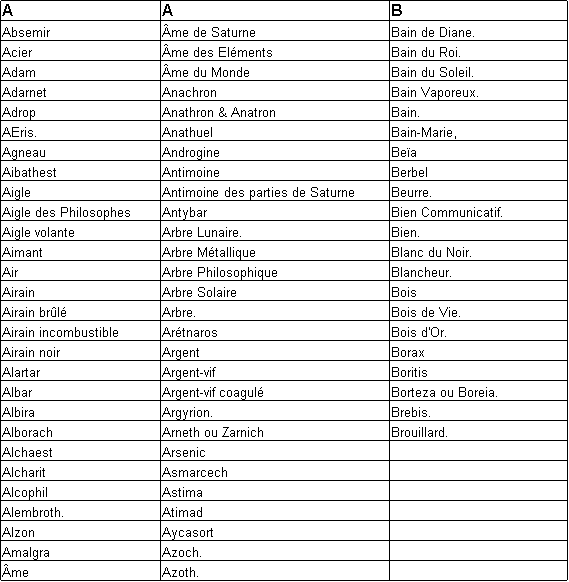
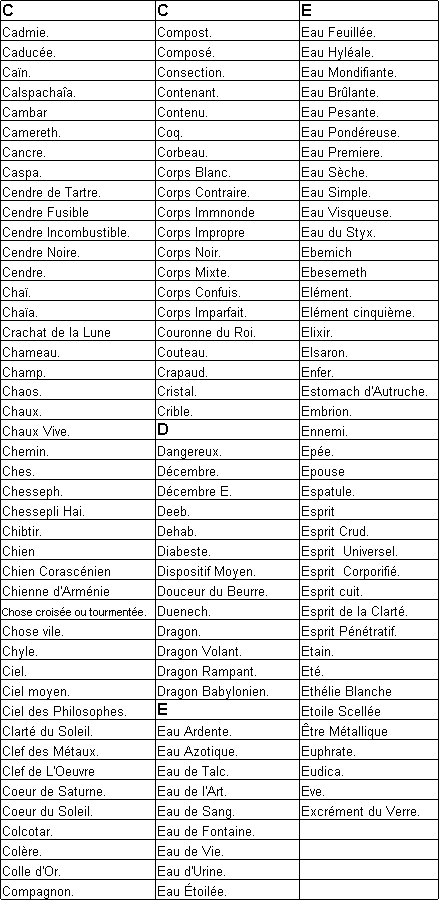
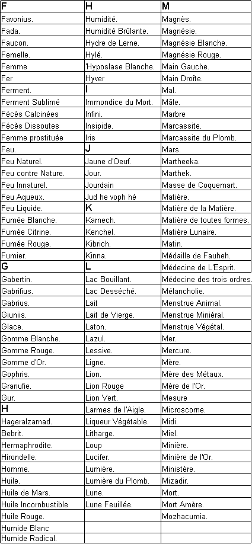
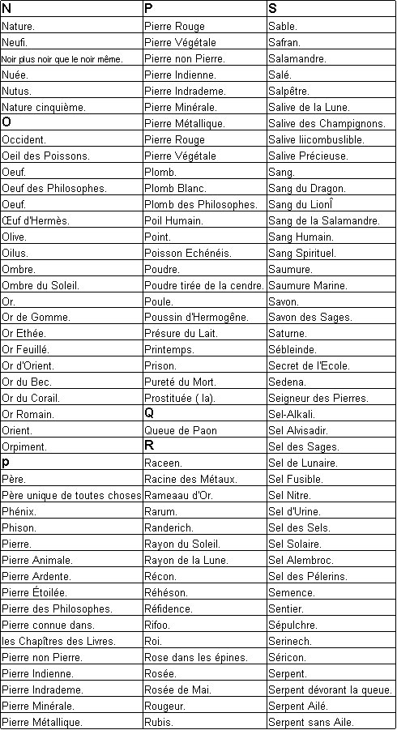
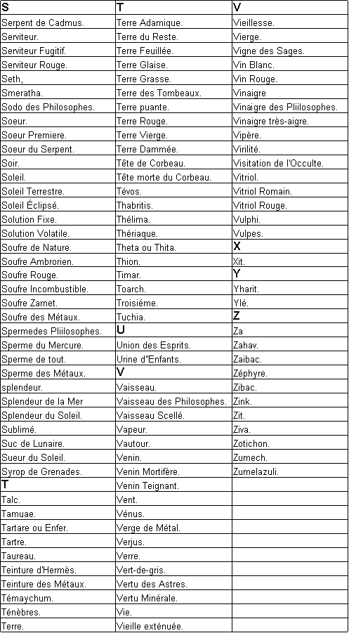
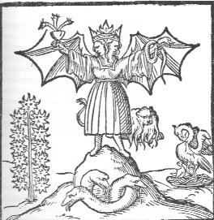
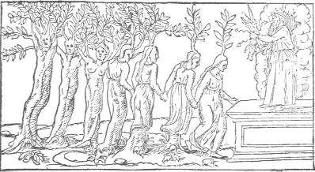
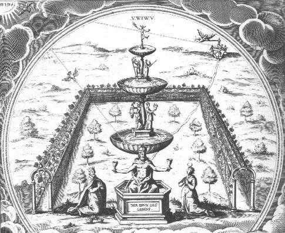
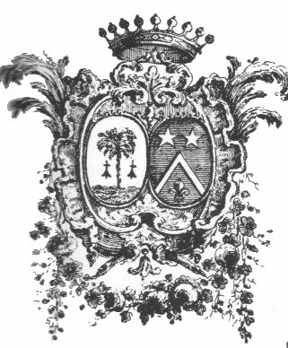
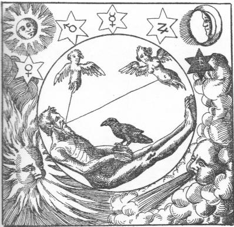

La matière des alchimistes
revu le 27 juillet 2003
IntroductionJe dois ce texte à M. Alain Mauranne qui a extrait cet article « Matière » du Dictionnaire Mytho-hermétique de Dom Pernety. Qu'il reçoive ici l'expression de ma gratitude. Ce texte est augmenté d'entrées provenant des lettres A-B-C pour l'instant disponibles sur le site Alchimie du merveilleux [livres, articles, forum] qui édite peu à peu l'index alphabétique du Dictionnaire mytho-hermétique. Ces pages se rapportent à la matière première des alchimistes et, à ce titre, à la section prima materia. La préface du Dictionnaire sera analysée prochainement car elle présente un intérêt hermétique certain.

FIGURE I
(frontispice du Dictionnaire de Dom Pernety)
note : Depuis que ces lignes ont paru, le Dictionnaire Mytho-hermétique est disponible sur deux sites ; l'un en format html [Librairie du Merveilleux], l'autre en format Acrobat [Hermétisme et alchimie].
Le texte de Joseph-Antoine Pernety : article Matière
En termes de Philosophie Hermétique, [la Matière] est le sujet sur lequel s'exerce cette Science pratique. Tous ceux qui ont écrit sur cet Art se sont appliqués à cacher le vrai nom de cette matière, parce que si elle était une fois connue, on aurait la principale clef de la Chymie1. Ils l'ont nommée de tous les noms des individus créés, parce qu’elle contient, disent-ils, en puissance toutes les qualités et propriétés des choses élémentaires.
C'est un cinquième élément, une quintessence2, le principe et la fin matériels de tout.
Gerhard Dorn dit que c'est la matière même dont les cieux3 sont composés, que c'est la quintessence de notre matière sublunaire, incorruptible, et conservatrice de ce bas monde, le vrai végétatif, l'arme des éléments qui préserve de corruption tous les corps sublunaires, et leur donne le degré de perfection qui convient à chaque espèce : qu'avec l'aide de l'Art on peut l'en séparer et la communiquer aux trois règnes animal, végétal et minéral, que cette matière enfin est ce que les Alchimistes appellent L'Oiseau d’Hermès qui descend continuellement du ciel en terre, et y remonte sans cesse4.
On peut voir tous les autres éloges qu'il lui donne dans son Traité de Lapide Metaphysico.
Mais la matière des cieux diffère t-elle de celle de la terre ? Est-elle nécessaire pour la végétation, la conservation et l'altération des corps sublunaires ? Peut-elle être la matière prochaine de l'art Chymique ? Je laisse les deux premiers à décider aux Physiciens Naturalistes, et le troisième point aux Alchimistes, dont la vraie matière première n'est autre que les accidents de la première matière des Sectateurs d'Aristote. Les Chymistes prennent cette matière parce qu'elle est la semence des choses, et que la semence de chaque être est sa première matière qui nous soit sensible.5
Toutes les fois donc que les Philosophes Hermétiques parlent de leur première matière, on doit toujours l'entendre de la semence des corps6. Il y aurait beaucoup de choses à observer sur cette première matière des Chymistes ; mais c'est à ceux qui font des Traités du Grand OEuvre, à en parler avec toute l'étendue qu’elle mérite. Je me contenterai donc de dire avec Becher (OEdipus Chymicus) que tous les corps ne sont point en totalité cette première matière tant recherchée ; mais qu' ils la contiennent, et qu'ils la sont en effet quant à la puissance ; ce qui doit même s'entendre des métaux, qui ne peuvent censés être cette première matière qu’après y avoir été réduits7.
C'est donc la semence des corps, qui est la première matière des chymistes, dans laquelle ils distinguent la semence mâle qui tient lieu de forme8, et La semence femelle qui est la matière propre à recevoir cette forme9. C'est pourquoi lorsque les Chymistes parlent de leur première matière, ils entendent le plus souvent la semence femelle, quoiqu'ils parlent quelquefois de l'une jointe avec l'autre.
Alors ils disent qu'elle a tout ce qui lui est nécessaire, excepté le feu ou lent extérieur, que l'Art fournit à la Nature: comme le dit Empedocles dans le Code de Vérité. Il n'est pas rare aussi de voir dans les livres d' Alchimie, tout ce qui produit semence être pris pour la matière du Grand Oeuvre, de la même manière que l'on peut dire l'homme et les animaux composés des plantes, parce qu'ils s'en nourrissent. Ils s’expriment ainsi en parlant de la matière éloignée, comme ils parleraient de la prochaine, de la puissance comme de l'acte , de la cause comme de l'effet ; ce qui ne contribue pas peu à faire prendre le change aux lecteurs qui ne sont pas versés dans cette Science.
Cette matière ne se trouve donc que dans la semence des corps, et dans le point de perfection propre à la génération ; c'est-à-dire, quand elle n'a pas été corrompue ou altérée par la Nature ou l'Art : et quand on la prend telle, elle a la puissance d'engendrer, qui n'attend qu'à être réduite à l'acte au moyen du feu10. Si on la prend généralement, sans avoir égard à la forme, elle se trouve dans tous les corps mais non pas prise comme matière ayant forme chymique.
Dans les animaux elle s'appelle Menstrue, dans les végétaux Eau de pluie, et dans les minéraux Eau mercurielle11. Elles partent toutes d'une même racine et composent cependant selon Becher, trois matières tout-à-fait différentes, quoiqu'elles aient beaucoup d'affinité entre elles, n'étant qu'une Eau subtile et visqueuse ; mais comme elles différent par leur propre substance , il n'est pas possible à l'Art de les changer l'une en l'autre.
Celle des animaux semble être faite pour l'union , celle des végétaux pour la coagulation, et celle des minéraux pour la fixation ; ce que l'on remarque aisément dans la différence de l'union et de la liaison des parties qui composent chaque individu de ces trois règnes. La première matière des Chymistes, éloignée est une eau pondéreuse produite par une vapeur mercurielle ; la prochaine est l‘eau mercurielle qui ne mouille point les mains12, comme le dit Saint Thomas dans son Commentaire sur le troisième livre d'Aristote touchant les Météores.
La fin que se proposent les Chymistes dans la pierre philosophale étant d'élever les métaux imparfaits à la perfection de l'or, au moyen de sa forme et de sa matière ; il faut donc que l'une et l'autre soient métalliques et minérales. Les Alchimistes ne sauraient réussir dans leur dessein, si, comme dit Aristote le Chymiste, ils ne réduisent les corps en leur première matière, c'est-à-dire en leur matière féminale, et ne la mettent ensuite dans une matrice propre à y produire des fruits si désirés.
Pour le premier article, tout le monde sait que les choses ne se détruisent que par les contraires; c'est le soufre qui donne la forme, il faut donc se servir de mercure pour le dissoudre et après cette dissolution on ajoutera un soufre pour coaguler et fixer le mercure, en en faisant le mariage dans le vase propre à cet effet13.
Les Philosophes Hermétiques ont toujours parlé de cette matière et des opérations de l'Art dans des termes allégoriques et énigmatiques. Le Soufre et le Sel, comme les deux principes constituant de cette matière, ont été nommés, le premier, Roi, Mâle, Lion, Crapaud, Feu de nature, Graisse du Soleil, Le Soleil des corps, Le Lut de Sagesse ou Sapience, Le Sceau d'Hermès, Le Fumier et la Terre des Philosophes, Huile incombustible, Mercure rouge, et une infinité d'autres noms même de diverses langues qui tous cependant signifient quelque matière fixe, coagulante ou glutineuse ; parce qu'ils attribuent au Soufre, la forme, la chaleur innée, le Sperme, l'âme, l'odeur, la couleur, la saveur, la fixité, et tout ce qui est capable de causer la cohésion des parties des corps14.
Le second principe, ou Sel, qui comprend toutes les eaux différentes dont nous avons parlé, comme semences des trois règnes, n'est pas le sel commun, ou le sel des corps, acide, ou qui brûle la langue; car cette saveur vient du Soufre qui y est mêlé, et par conséquent toutes ces sortes de sels ne doivent être regardés que comme des mixtes, et non des sels principes. Le Sel des Philosophes doit se comprendre abstractivement de ce Soufre, et ils ne l'ont ainsi nommé que parce que sa forme accidentelle lui donne souvent l'apparence de glace, ou de sel coagulé, ou qu' il se résout en eau aussi aisément que le sel.
C'est ce sel qu 'ils appellent proprement la matière propre à recevoir la forme15. C'est pourquoi ils l'ont nommé Humide radical, Menstrue , Corps en puissance, Chose ou Substance capable à recevoir toutes fortes de formes, Reine, Femelle, Aigle, Serpent, Eau Céleste, Ecume de la Lune, Clef, Mercure blanc, Mercure des Philosophes, Eau de vie et de mort, Cire où l'on imprime le Sceau d'Hermès, Eau de glace, Pluie des Philosophes, Fontaine, Bain du Roi, Bain des corps, Vinaigre très aigre, Savon , et tant d'autres noms qu'on trouvera ci-après par ordre alphabétique et dont la plupart seront expliqués dans les articles qui les concernent.16




La plus grande partie des Philosophes pensent que tout a pour principe une eau savonneuse c’est-à-dire, composée de deux substances, l'une saline et l'autre oléagineuse, appellée Cahos, et propre à recevoir quelque forme que ce puisse être ; que Dieu l'a divisée en deux parties, en eau grossière, et en eau subtile ; la première visqueuse, huileuse ou sulfureuse, la seconde saline, subsaline subtile et mercurielle. Il les subdivisa encore en trois parties générales ; de la plus subtile il forma les animaux, de la plus crasse les métaux, et de celle qui participe des deux il en composa les végétaux ; de manière que celle d'un règne ne saurait être transmuée radicalement en un autre règne par aucune opération de l'Art. 
La Pratique de la Chimie prouve à ceux qui douteraient de ce système, dit Becher, qu'il n'est pas la production d'un cerveau creux. Le Soufre agit sur le Sel en l'agglutinant et lui donnant ainsi la forme : le Sel agit sur le Soufre en le dissolvant et le putréfiant et l'un joint avec l'autre en quantité proportionnée, constituent une eau visqueuse et vitriolique, qui est la première matière de la Nature de l'Art.18
Voici une partie des noms16 que les Philosophes Hermétiques ont donné à leur matière. La plupart sont expliqués dans ce Dictionnaire parce que, disent Morien et Raymond Lulle, c'est dans l’intelligence de ces noms si différents d’une même chose, que constitue tout le secret de l'Art. Les uns sont tirés du grec, les autres de l'hébreu, quelques-uns de la langue arabe, plusieurs du latin et du français.
L'on connait les vrais Philosophes à la matière qu'il emploient pour le magistère. Ceux-là sont dans l'erreur qui se servent de diverses matières pour composer leur mercure, c'est-à-dire de matières de diverses natures. Elle est une, et quoiqu'elle se trouve partout et en tout, elle ne peut se tirer que de sa propre minière.
C’est une. eau visqueuse, un esprit corporifié. Elle est la même matière que celle dont la Nature se sert pour faire les métaux dans les mines ; mais il ne faut pas s'imaginer que ce sont les métaux-mêmes, ou qu'elle s'en tire ; car tous les Philosophes recommandent de laisser les extrêmes et de prendre le milieu ; comme pour faire du pain, on ne prend, dit Philalethe, ni le grain, ni le son, mais la farine.19
On ne fait pas non plus du pain avec du pain cuit. Il ne faut pas aussi chercher à former une matière des quatre éléments qui sont les principes principians de tout ; mais une matière élémentée, qui contienne en elle-même les quatre éléments, et qui soit la semence des métaux. Cette matière a été voilée par les Anciens sous diverses fables, mais plus particulièrement sous celles d'Hercule & d'Anthée, de Pyrrha et de Deucalion.20
Mais si quelqu'un veut réussir dans les opérations du magistère, qu'il apprenne auparavant, dit Philathète, ce qu'on entend par les compagnons de Cadmus21, quel est le Serpent qui les dévora, ce que c'est que le chêne creux contre lequel il transperça ce Serpent; ce qu'on entend par les Colombes de Diane, qui surmontent le Lion en l'amadouant ; ce Lion vert, qui est un vrai Dragon Babylonien, dont le venin fait tout mourir : ce que c'est que le caducée de Mercure, etc.22
Cette matière est appellée vile, et Philalèthe entr'autres dit que le prix des principes matériels de l’Oeuvre ne passe pas trois louis d'or. Il ajoute que quant à la fabrique de l'Eau séche des Sages, deux écus suffisent pour en faire une livre. Il assure de plus qu'on peut avoir autant de matière principe de cette eau, qu'il en faudrait pour animer deux livres de mercure.
Plusieurs Philosophes disent que les pauvres ont autant de cette matière que les riches23 ; mais il faut l'entendre de la matière principe dont celle des Sages est composée. Notre eau, dit Philalèthe, est composée de plusieurs choses, c'est-à-dire d'une seule et unique chose faite de diverses substances, mais d'une et même essence.
Il faut que dans notre eau il se trouve un feu, une liqueur saturnienne végétable, et un lien du mercure24. Ce feu est minéral sulfureux, sans être proprement minéral , loin d'être métallique. C'est un cahos ou esprit, sous la forme d'un corps, qui n'est cependant pas corps puisqu’il est tout volatil, et qui n’est pas aussi absolument esprit, puisqu'il ressemble à un métal liquéfié25.
Quelquefois les Philosophes ont restraint le nom de Matière à leur mercure animé26, et non à la matière dont il est extrait.
Notes 1. il n'y a pas qu'une seule matière première dans le Grand oeuvre. Nous avons montré dans d'autres sections [1,2,3,4,5,6,7,8,9,10] qu'il y a sans doute trois matières premières. L'une est un vitriol [vert, bleu ou blanc] ou une substance vitriolique [argile, gypse]. L'autre contient un sel de potassium [salpêtre, tartre, huile de tartre par défaillance] ou de soude [natron, sel admirable de Glauber]. La 3ème est probablement de la chaux ou un carbonate de calcium qui joue un rôle des plus importants comme agent réducteur [calcaire, carbonate de chaux, pierre de Jésus ou pierre du Levant]. Le charbon pourrait tenir de substitut à la chaux, mais rien d'assuré.
2. la quintessence correspond à un état de la matière qui n'était pas connu des Anciens parce qu'ils ne savaient pas à quoi correspondait l'oxydation des métaux ; ils les nommaient alors les chaux métalliques. La quintessence était une chaux métallique dissoute, correspondant à l'humide radical métallique. On peut dire que la quintessence représente l'ensemble des extrêmes qu'il convient d'unir grâce au vaisseau de nature. Dom Pernety nous dévoile -Fables- le secret de l'Art sacerdotal dans la Clef des Sciences :
«Le premier pas à la sagesse est la crainte de Dieu, le second la connaissance de la Nature. [...] La Nature enseigne aux clairvoyants la Physique hermétique. L'alchimie proprement dite est une opération de la nature, aidée par l'art. Elle nous met en main la clef de la magie naturelle ou de la physique, et nous rend admirables aux hommes, en nous élevant au-dessus du commun. Du Secret - La statue d'Harpocrate, qui avait une main sur sa bouche, était chez les anciens Sages l'emblême du secret, qui se fortifie dans le silence, s'affaiblit et s'évanouit par la révélation. [...] - Des Clefs de la Nature - De toutes choses matérielles il se fait de la cendre ; de la cendre on fait du sel, du sel on sépare l'eau et le mercure on compose un élixir ou une quintessence. »
Harpocrate, au sentiment de tous les auteurs, est le dieu du silence et les statues où il est représenté le montrent dans l'attitude de porter le doigt sur sa bouche. On pourra en rapprocher ce que Fulcanelli a dit sur un sujet analogue [cf. Cambriel]. Pour Pernety, on a souvent confondu Harpocrate avec Horus ; Harpocrate n'est pas le symbole du soleil mais il est fils d'Isis et d'Osiris et sa symbolique a des rapports avec le chat-huant, le chien et le serpent. Le chat-huant était l'oiseau de Minerve, déesse de la Sagesse ; le serpent fut toujours un symbole de prudence -en même temps que celui du dissolvant- et le chien un symbole de fidélité. On ne sera pas loin d'avoir fait la moitié du chemin si l'on examine le commentaire que donne Pernety, plus loin [chap. IV, La biche aux cornes d'or, Fables] :
« La Nature agit toujours longuement, et quoique l'Art puisse abréger ses opérations, il ne réussiarait pas s'il en précipitait trop les procédés. Au moyen d'une chaleur douce, mais plus vive que celle de la Nature, on peut prématurer une fleur ou un fruit ; mais une chaleur trop violente brûlerait la plante, avant qu'elle eût pu produire ce qu'on en attendait. [cf.chapitre 35]. Ripley [Douze portes] nous assure d'ailleurs, et beaucoup d'autres, qu'il faut un an pour parvenir à la perfection de la pierre au blanc, ou la Diane des Philosophes, que cet Auteur appelle chaux. »
Jean d'Espagnet est aussi d'avis que la quintessence et le moyen de conjoindre les extrémités du vaisseau de nature ne sont pas étrangers l'un à l'autre :
"La troisième digestion donne à la terre qui vient d'être renouvelée un lait de rosée, et lui communique toutes les vertus spirituelles de la quintessence ; elle lie au corps l'âme vivifiante par l'entremise de l'esprit. Alors la terre possède en elle un riche trésor, et devient d'abord semblable à la Lune éblouissante, puis au Soleil rougeoyant : elle est dite d'abord terre de Lune, puis terre de Soleil, car elle naît, dans un cas comme dans l'autre, du mariage de l'un et de l'autre. Ni l'une ni l'autre terre ne craignent plus les rigueurs du feu, car toutes deux sont exemptes de toute tache, parce qu'elles ont été purifiées plusieurs fois de leur tare par ce feu (même), et en ont souffert un grave martyre, jusqu'à ce que tous les éléments aient été digérés ensemble." [l'Oeuvre secret d'Hermès]
Dom Pernety dit ici que le grand secret de l'oeuvre est de savoir blanchir le laiton et il énumère sur une page tous les qualificatifs par lesquels le philosophes définissent la matière qui résulte de la conjonction des deux Soufres :

FIGURE II
(extrait du tome I des Fables Egyptiennes et Grecques ;
disponible en format word sur le site hermétisme et alchimie, tome I)Ce laiton ou « laton non net » est un autre mot pour qualifier l'Airain ou tête de corbeau, à ce stade de l'oeuvre. Dom Pernety nous dit finalement ceci de la quintessence :
« La quintessence est une extraction de la plus spiritueuse et radicale substance de la matière ; elle se fait par la séparation des éléments qui se terminent en une céleste et incorruptible essence dégagée de toutes les hétérogénéités. Aristote la nomme une substance très pure, incorporée en certaine matière non mélangée d'accidents. Héraclite l'appelle une essence céleste, qui prend le nom du lieu d'où elle tire son origine. Paracelse la dit, l'être de notre ciel centrique [il s'agit alors du radical métallique du soleil] ; Pline, une essence corporelle, séparée néanmoins de toute matérialité, et dégagée du commerce de la matière. Elle a été nommée en conséquence un corps spirituel, ou un esprit spirituel, fait d'une substance éthérée. Toutes ces qualités lui ont fait donner le nom de quintessence, c'est-à-dire une cinquième substance, qui résulte de l'union des parties les plus pures des éléments. [...] »
Il faut bien voir qu'il s'agit d'un état de la matière qui devait sembler singulier aux alchimistes : une substance qui n'était ni eau, ni terre, ni feu ni air mais qui tenait à la fois des quatre principes tout en ayant sa spécificité. Le secret pilosophique consistait à tenir son feu selon des proportions que les uns définissaient comme clibaniques [Fig. Hiér.] ou les autres, géométriques [Artephius]. Le Trévisan [Verbum] conseillait de donner un feu lent et faible plutôt que fort au risque, sinon, de brûler les fleurs. Dom Pernety poursuit :
« Cette difficulté n'est pas cependant si grande qu'elle le paraît d'abord à la première lecture des philosophes ; quelques-uns nous avertissent [Verbum] que la Nature a toujours la balance à la main pour peser ces éléments, et en faire ses mélanges tellement proportionnés, qu'il en résulte toujours les mixtes qu'elle se propose de faire, à moins qu'elle ne soit empêchée dans ses opérations parle défaut de la matrice où elle fait ses opérations, ou par celui des semences qu'on lui fournit, ou enfin par d'autres accidents...»
Nous n'avons hélas pas les commentaires de Dom Pernety sur la guerre de Troie mais on ne peut pas s'empécher d'évoquer Zeus pesant dans sa balance, quand le soleil arrive au milieu du ciel [L'Iliade, chant VIII], le sort des Achéens et des Troyens :
"Ayant pris ses balances par le milieu, il [Zeus] les lève, et le bassin dans lequel il avait mis le jour fatal des Achéens s'abaisse. Les destins des Achéens touchèrent la terre féconde, et ceux des Troyens s'élevèrent vers le ciel vaste. Alors Jupiter tonna terriblement du haut de l'Ida, et il lança un éclair brûlant sur les Achéens ; ceux-ci s'en étonnèrent et une pâle crainte les saisit tous."
Les Achéens seraient-ils plus fixes que les Troyens ? Attendons de lire un jour l'avis de Pernety... Un alchimiste anonyme, auteur de l'écrit intitulé Huginus à Barma semble du même avis que d'Espagnet :
"D'ailleurs tous les astres de l'Astronomie inférieure brillent en lui, & deviennent spirituels ou volatils par son moyen, parce qu'il les purifie & délivre de leur nature terrestre & féculente, & les change en une semence convenable & exactement pure. C'est donc un vrai ciel, disons mieux, c'est l'esprit de tout l'univers & sa quintessence, car il a la force du feu, & son origine est céleste. II ne se manifeste que lorsqu'on lui a enlevé & qu'on a séparé de lui ses éléments ou parties les plus grossières. Il faut donc le purifier, après quoi il n'a besoin d'autre chose au monde que de devenir mûr [...]" [chap. XIV]
Ici, on doit penser que le Ciel est le milieu même du Mercure, et que cette volatilité, cette spiritualisation des astres, c'est-à-dire des Soufres, est l'image de la sublimation philosophique par la voie sèche. Cette quintessence, du reste, est répertoriée au mot Ciel du dictionnaire mytho-hermétique [1,2] et confirme l'impression qui domine quand on veut trouver un qualificatif valable au vase de nature qui correspond au Ciel firmamental [Philalèthe]. Salomon Trismosin [Toyson d'Or] nous donne une version assez alambiquée de la quintessence, qui n'est pas sans rappeler l'humour de Fulcanelli, comme quoi les alchimistes avaient décidément beaucoup d'esprit :
"Les philosophes pour ne laisser rien en arrière de ce qu'ils doivent honnêtement découvrir de cet art, lui attribuent deux corps, savoir est le soleil et la lune, qu'ils disent être la terre et l'eau. Ces deux corps s'appellent aussi l'homme et femme, lesquels engendrent quatre enfants, deux petits hommes qu'ils nomment la chaleur et froideur, et deux petites femmes signifiées par le sec et l'humide : de ces quatre qualités il en sort une cinquième substance, qui est la Magnésie blanche, laquelle ne porte aucune ride de fausseté sur le front. Et Senior poursuivant plus au long cette même figure la conclut en cette sorte : « Quand, dit-il, les cinq sont assemblés ensemble, et viennent à être une même chose, la pierre naturelle se fait lors de toutes ces mixions égales, qu'on nomme Diane. Avicenne à ce propos dit que si nous pouvons parvenir jusqu'au cinquième..."
L'homme et la femme désignent respectivement le Soleil et la Lune hermétique, c'est-à-dire le Sel des sages. Les quatre enfants représentent les quatre Eléments que l'on reconnaît facilement : la chaleur, c'est le Feu ; la froideur, c'est l'Air ; le sec est la Terre et enfin l'humide est l'Eau. Point n'est besoin d'être cabaliste pour décrypter cette partie du texte. Ce qui est plus intéressant, c'est de voir que le principe mâle procure le Feu et l'Air et que le principe femelle procure la Terre et l'Eau. Trismosin reste dans la grande tradition hermétique. La Terre est la Virgo paritura, dépeinte par Fulcanelli dans les Mystères et l'Eau, c'est la mer [mère] où nagent les poissons gras et sulfureux de Jean d'Espagnet. Quant à la cinquième substance qui est décrite, elle correspond à la quintessence, ici nommée « Magnésie blanche », tirant donc à la fois de l'Aimant [qui est la demeure du Sel] et de la blancheur, symbole du régime de la Lune, et signe que l'enfant est né, et que le Ciel et la Terre sont mariés. Notez bien que le Ciel représente le Soufre sublimé qui se coagule avec le Sel terrestre. Vient la suite :
"...nous obtiendrons ce que tous les auteurs appellent l'âme du monde. Les philosophes nous expliquent sous l'écorce de cette similitude de l'essence et le modèle de leur vérité par la démonstration d'un œuf, pour ce que dans son enclos il y a quatre choses assemblées et ensemble conjointes, la première desquelles est le dessus qui est la coquille, signifiant la terre, et le blanc qui est l'eau ; mais la peau qui est entre l'eau et la coquille est l'air qui divise la terre d'avec l'eau [c'est le ciel terrestre de Lavinius] : le jaune est le feu et a une peau fort déliée tout à l'entour de soi : mais celui-là est l'air le plus subtil, lequel est ici au plus intérieur du très subtil, car il est plus adhérent et plus proche et voisin que n'est le feu, repoussant le feu et l'eau au milieu du jaune qui est cette cinquième substance, de laquelle sera formée et engendrée la poulette qui croît par après."
Cette « poulette » n'est autre que le Poulet d'Hermogène. L'oeuf, tel qu'il est décrit par Trismosin, apparaît comme un modèle théorique du Compost : il se compose de la coquille qui est le Sel. Il enveloppe le soufre rouge comme une couverture dont il est séparé par la pellicule qui enveloppe le blanc d'oeuf. Cette pellicule est assimilée à l'Air ; le blanc d'oeuf figure le Mercure et le jaune est le Soufre. Quant à l'eau « au milieu du jaune », elle figure la chaux métallique dissoute dans le Mercure : c'est la quintessence. Plus loin, Trismosin revient avec plus de précision sur notre quintessence :
"Plusieurs autres tiennent que ce mercure est proprement appelé quintessence, l'âme du monde, esprit, eau permanente, menstrue, et d'une infinité d'autres noms qui lui rapportent tous selon la diversité de ses effets, auquel ils donnent tant de force et de vertu, que sans l'assistance de cette âme vivifiée, le corps de notre vaisseau, c'est-à-dire la matière noire qu'ils appellent le Dragon dévorant sa queue, qui est sa propre humidité n'obtiendrait jamais la vie, et ne ferait paraître aucun signe de bon effet"
Ce qu'il faut bien comprendre ici, c'est que l'année alchimique est composée de quatre saisons qui correspondent chacune aux Quatre Eléments : au Printemps est dévolu la Terre ; l'Eté est la saison de Feu ; l'Automne est la saison de l'Eau et l'Hiver se rapporte à l'Air. Veut-on en avoir la preuve ? Il faut lire ce qu'en dit Basile Valentin dans son Char Triomphal de l'antimoine :
"L'antimoine a les quatre extrémités et qualités en soi avec leurs propriétés. Il est froid et humide, chaud et sec. Il se règle selon les quatre saisons de l'année. Il est fluide et fixe. Celui qui est fluide n'est pas sans poison; et celui qui est fixe est libre de tout poison. C'est pourquoi il est certain que plusieurs écrivent diverses fictions de l'antimoine, lorsqu'ils parlent de ses facultés malignes..."
C'est une définition du Mercure que nous donne Basile et pas de l'antimoine ; du moins cette définition a-t-elle abusé beaucoup d'étudiants qui ont cru voir dans le corps de l'antimoine la matière des alchimistes. Dom Pernety n'est pas tombé dans cette erreur et a montré que par antimoine, les Adeptes avaient en vue le dissolvant. [à lexique]. Voici une image du Mercurius :

FIGURE III
(Hermaphrodite avec trois et un serpents, Rosarium philosophorum,
Artis Auriferae, vol. II, 12, Bâle, 1593)3. Cette matière dont les cieux sont composés rappelle l'Esprit universel qui a des rapports avec l'acide carbonique ; c'est de cet Esprit, allié à l'humidité, que se forme le sel de pierre. Les Philosophes ont parlé de cette matière pour la cacher outre mesure quand il s'est agi de la désigner en particulier. En revanche, ils se sont étendus sur ses qualités et ses propriétés quand ils en parlaient en général. Le Cosmopolite a résumé le mieux cette question difficile lorsqu'il préconise d'examiner :
"...si ce que vous vous proposez de faire est conforme à ce que peut faire la Nature..." [Nouvelle Lumière Chimique]
4. L'Oiseau d'Hermès est le nom que les alchimistes donnent au Mercure philosophqiue. ils l'appellent aussi Faysan ou Oie. D'autres l'appellent le Poulet d'Hermogène [Artéphius, Livre Secret]. L'idée de circulation perpétuelle est tenue dans le mouvement virtuel qu'on décrit entre la terre et le ciel « chymiques ». Dom Pernety évoque ici le principe résolutif de la Nature, envisagé dans le sens du microcosme hermétique, c'est-à-dire du vase de nature. Cet Oiseau d'Hermès correspond à un esprit fixe, composé d'un feu très pur et incombustible, qui fait sa demeure dans l'humide radical des Mixtes. C'est le seul Mercure des Philosophes qui a a la propriété et la vertu de « tirer l'Or » de sa prison, de le corrompre et de le disposer à la génération, comme le dit Pernety dans ses Fables [De la Matière du Grand oeuvre en général]
Fulcanelli écrit de son côté dans les Mystères, p. 116 :" Et notre Mercure philosophique est l'oiseau d'Hermès, à qui l'on donne aussi le nom d'Oie ou de Cygne, et quelquefois de Faysan "
Esprit Gobineau de Montluisan ne dit pas autre chose en substance :
"L'aigle, par exemple, ne signifie autre chose que l'Esprit universel du monde ; et c'est l'Oiseau d'Hermès, et le mouvement perpétuel des Sages"
Mais il ne faut pas confondre cet oiseau avec le Phénix dont nous parle Pontanus dans son Epître :
"ll naît de moi un Oiseau admirable [le phénix hermétique], qui de ses os, qui sont mes os, se fait un petit nid, où, volant sans ailes [Philalèthe ne dit pas autre chose dans l'Introïtus, VI], il se revivifie en mourant, et l'Art surpassant les lois de la Nature, il est à la fin changé en un Roi, qui surpasse infiniment en vertu les six autres."
Mais c'est sans doute Salomon Trismosin qui a le plus parlé de l'Oiseau d'Hermès, en sa Toyson d'or :
"Voulant donc par un abrégé métaphorique décrire succinctement les particulières propriétés de ce susdit mercure, il use de ces mots : « Je me suis, dit-il, donné de garde d'un oiseau, l'appelant ainsi pour ce qu'il est esprit et corps, premier né de la terre » - Très commun, très caché, très vil, très précieux, - Conservant, détruisant, bon et malicieux, - Commencement et fin de toute créature, car la corruption et la noirceur sont le commencement et la fin de toutes choses. Ce qu'Augurel en sa Chrysopée confirme encore fort à propos quand il parle de cet oiseau noir dissolvant les corps par ces vers suivants : - Et qui plus est cette nature efforce - Qui d'amollir ces deux métaux s'efforce - En toute chose est naturellement - En lui donnant fin et commencement."
Là encore, il importe de bien différencier les oiseaux dans la volière hermétique ; l'oiseau noir ou corbeau est le vrai Oiseau d'Hermès ; c'est celui qui dissout les corps. L'oiseau volant sans aile, c'est le soufre qui disparaît ou qui s'évanouit sous l'effet dissolvant du Mercure. Enfin, le phénix, c'est l'oiseau renaissant de ces cendres, c'est-à-dire l'apparition de la Pierre par accrétion du Soufre.
5. C'est une tautologie ; cette périphrase montreau fond, soit que Pernety ne voulait pas parler soit qu'il ne trouvait rien à dire. Si l'on devait donner un seul nom à la matière des Sages - alors que l'on sait qu'il en existe plusieurs - alors on citerait l'ajronirnum des Grecs, correspondant à notre fleur de nitre. Mais alors, on manquerait la part vitriolique que d'aucuns considèrent comme essentielle à l'Oeuvre.
6. L'explication de l'expression « semence des corps » pourrait réclamer une section entière. Rappelons simplement que le Corps, en alchimie, représente le squelette de la Pierre, la partie qui porte l'or. E. Canseliet la traduisait bien par le mot cristojoroV [qui porte la croix]. Nous avons vu que cette matière s'extrayait surtout de la terre de Chio ou de la terre de Samos et qu'elle se présentait sous la forme d'une poudre blanche et brillante, absolument infusible. Quant à la semence, c'est la Toyson d'or, encore appelée « semence métallique » par de nombreux Adeptes.
7. On ne voit pas qu'on ne puisse résoudre les métaux qu'en sels ; des sels propres à l'oeuvre, nous en trouvons trois : les oxydes, les sulfates et les chlorures. Les sulfates peuvent être réduits en sulfure : c'est le cas du tartre vitriolé qui est le principal agent de la voie sèche. Des sulfates métalliques peuvent aussi se transformer en oxydes qui cristallisent. On peut trouver dans la théologie un équivalent remarquable de ce processus : c'est l'Incarnation de l'esprit ou encore la chute de l'ange, en jouant sur l'assonance spirituelle entre qeion et qeioV. Le sulfate - l'Ânge si l'on préfère - se transforme en Âme corruptible - l'oxyde - qui s'incarne dans la chair [le corps] - cristallisation. Quant aux chlorures, ils trouvent leur emploi dans la voie humide qui passe par les dissolutions auriques, la préparation du pourpre de Cassius et les strass colorés [si les Anciens les ont préparé par hasard, ils ne disposaient que de très peu de moyens pour les distinguer des gemmes orientales].
8. La semence mâle est le Soufre rouge [symboliquement rouge, car c'est cette matière qui assure la teinture de la pierre]. Ce Soufre rouge est en général un oxyde qui cristallise dans le Mercure. Cette cristallisation est assurée par la volatilisation très progressive du Mercure. Ainsi, comme un plongeur qui doit respecter des palliers dans sa progression vers la surface, l'artiste doit tempérer le feu et ne le diminuer que de manière très progressive. C'est l'un des secrets du Mercure. D'autres fois, ce Soufre rouge est un métal amené dans un état de division extrême. L'artifice à employer dans ce dernier cas est de préparer un mélange de deux chlorures métalliques où l'un des deux métaux, à chaud, a beaucoup plus d'affinité que l'autre pour le chlore. C'est ainsi que l'on prépare, par exemple, le pourpre de Cassius. L'aventurine est aussi obtenue par un tour de main du même ordre [la couleur de l'aventurine est liée à du cuivre à l'état métallique et très dévisé]. Le soleil figure en général l'hiéroglyphe céleste du Soufre rouge. Mais les alchimistes ont brouillé les cartes en symbolisant aussi Apollon par le soleil. Or Apollon est l'une des deux colombes de Diane, ou si l'on préfère, Apollon et Artémis sont les enfants de Latone qui représentent les composants du Mercure philosophique. Dans ce cas de figure, on est au 2ème oeuvre [préparation du dissolvant] alors que le Soufre rouge est utilisé au 3ème oeuvre [préparation de la Pierre].

FIGURE IV
(conjonction soleil-lune, Trsmosin, Splendor solis, 1582, planche IV -
cliquez sur la figure pour obtenir une image en couleur)9. Dès lors, on pourrait penser que la semence femelle est la partie volatile tandis que la semence mâle est la partie fixe. Il n'en est rien. La semence femelle correspond au Soufre blanc : c'est la toyson d'or. Il s'agit d'un sel ou parfois d'un mélange de deux sels que l'on prépare pour l'un, à partir d'un limon et pour l'autre à partir du sable de nos rivages côtiers. C'est la Lune qui est l'hiéroglyphe consacré de ce sel. Mais là encore, les alchimistes ont joué d'habileté pour confondre les ignorants en confusion et ils ont attribué plusieurs fonctions hermétiques à notre satellite. Il faut donc prendre garde à bien séparer la course de la lune dans le firmament qui dirige la chaleur développée dans le 3ème oeuvre et les phases lunaires : à chaque phase principale, nouvelle lune ou lune gibbeuse, c'est une matière différente qui a été attribuée par la Tradition. La lune est-elle à son 1er quartier ? Alors il s'agit du symbole du Mercure. Est-elle dans son dernier quartier ? C'est alors le Soufre blanc et c'est cela que résume la Table d'Emeraude : « le Soleil est son père et la Lune sa mère » en parlant de l'origine de la Pierre. Il faut donc bien comprendre que l'expression « première matière » ne recouvre qu'une réalité sous-jacente bien vague puisqu'elle confond plusieurs substances dont l'usage dans l'oeuvre intervient à des époques différentes.
10. On peut concevoir sans peine qu'elle se trouve dans les végétaux. N'oublions pas que pour amender leurs terres, les paysans y mêlent de la chaux et que l'alcali fixe se trouve dans les cendres de végétaux, cendres d'arbustes ou de chênes. Cet alcali fixe, mêlé à un autre sel, va donner une matière très fusible et qui ne se volatilise qu'à haute température. Cette matière est le Mercure : sa principale propriété est de pouvoir dissoudre des substances infusibles, principalement des silicates ou des alumino-silicates qui entrent dans la composition de nombreuses gemmes orientales.
11. Ici, Dom Pernety confond toutes les matières de l'oeuvre. Les expressions comme « menstrue universel » ou « eau mercurielle » sont réservées au Mercure philosophique à l'état animé, c'est-à-dire lorsqu'il a été aiguisé par le feu de Vulcain. Mais l'expression « eau mercurielle » recouvre non seulement le Mercure lui-même ou Lion vert mais aussi les éléments infusés dans le Mercure, c'est-à-dire les deux Soufres blanc et rouge qui forment le Rebis. L'eau mercurielle est donc le Compost philosophal, qui constitue le mélange du Mercure et du Rebis appelé aussi homme double igné par Basile Valentin ou androgyne hermétique pour d'autres. Ce Rebis a donné lieu à toutes sortes d'allégories, sur les jumeaux notamment [fables de Castor et Pollux, etc.]
12. L'eau qui ne mouille point les mains est le Mercure, non encore animé, sous forme de poudre blanche, très fusible, dissolvant sans être lui-même base ou acide ; c'est un sel complexe où sont mêlés du potassium, de la silice à des degrés divers d'oxydation. Dom Pernety a créé une confusion, comme nous l'avons dit, entre la « matière » de l'oeuvre et le Mercure [Fables, Des noms que les anciens Philosophes ont donné à la matière] :
Ils n'en parlaient que par allégories, et par symboles. les Egyptiens la représentaient dans leurs hiéroglyphes sous la forme d'un boeuf, qui était en même temps le symbole d'Osiris et d'Isis, qu'on supposait avoir été frère et soeur, l'époux et l'épouse, l'un et l'autre petits-fils du Ciel et de la Terre. D'autres lui ont donné le nom de Vénus. Ils l'ont aussi appelé androgyne, Andromède, femme de Saturne, fille du Dieu Neptune ; Latone, Maja, Semele, Leda, Cérès et Homère l'a honorée plus d'une fois du titre de mère des Dieux. Elle était aussi connue sous les noms de Rée [...], terre coulante, fusible...
Il est hors de doute que Pernety confond ici le Rebis ou androgyne hermétique et le Mercure qui s'apparente effectivement à une terre coulante et fluente. La confusion se précise un peu plus loin dans le même chapitre :
Le Philosophe Hermétique veut que le Laiton (nom qu'il lui a plu aussi de donner à leur matière) soit composé d'un or et d'un argent cruds, volatils, immeurs, et plein de noirceur pendant la putréfaction, qui est appelé ventre de Saturne, dont Vénus fut engendrée. C'est pourquoi elle est regardée comme née de la mer Philosophique. Le sel, qui en était produit, était représenté par Cupidon, fils de Vénus et de Mercure ; parce qu'alors Vénus signifiait le soufre et Mercure, l'argent-vif, ou le mercure philosophique.
Le laiton est l'airain hermétique, c'est-à-dire le Rebis. Il y a ici confusion entre le sel symbolisé par Vénus-Aphrodite, le nitre, et la terre qui résulte de la parturition singulière qui suit la phase de putréfaction initiale, quand les Soufres disparaissent dans le Mercure.
13. Ce mariage correspond au 3ème oeuvre, où les deux Soufres sont disposés dans le vaisseau de nature. C'est un vaisseau de verre où l'on doit obtenir une circulation permanente des éléments qui correspondent à la révolution des planètes sur l'écliptique, chaque signe zodiacal traversé déterminant les époques critiques de l'oeuvre. Ce sont les principes opératifs qui donnent la marche à suivre [Fables, Principes opératifs en particulier]. D'abord la calcination qui ne représente pas autre chose que la mort du Mixte, par la séparation de l'esprit ou de l'humide qui liait ses parties. C'est une pulvérisation par le feu comme le dit très bien Pernety et une réduction du corps en chaux, cendre, terre, fleurs, etc. La calcination philosophique se fait par le moyen de l'eau, ce qui a fait dire aux alchimistes : « les chymistes brûlent avec le feu, et nous brûlons avec l'eau ». La solution est la 2ème opération et consiste à ouvrir le corps des métaux pour en extraire l'humide radical : c'est là qu'apparaissent les chaux métalliques. C'est une solution du Corps et une congélation de l'esprit. La putréfaction est l'opération ultérieure. Elle est considérée comme la Clef de l'oeuvre et permet de découvrir l'intérieur du Mixte : elle rompt les liens des parties et rend « l'occulte manifeste ». En chimie moderne, on pourrait dire que les liens des parties sont constituées par des liaisons covalentes et ioniques. Rendre l'occulte manifeste, c'est faire apparaître des radicaux libres ; c'est agir par oxydo-réduction. Et le seul moyen que possédait les alchimistes pour ce faire, était d'employer la chaleur conjointement à l'artifice du Mercure, agent de dissolution de substances infusibles. Là réside aussi le secret du Mercure. Quant à la fermentation, elle est assurée par l'Or ; mais c'est d'un or bien particulier qu'il s'agit : c'est l'Âme de la Pierre dont seul, paraît-il, Nicolas de Valois a donné l'épithète vulgaire [Fulcanelli, DM, II]. Dès lors, la Pierre au rouge n'apparaît que comme une composition faite de terre et d'eau, c'est-à-dire de soufre et de mercure fermentés avec l'or [Pernety]
14. Il s'agit du Soufre rouge ou teinture radicale des Corps. Pernety inclut dans sa liste des termes qui, de notre avis, n'ont rien à voir avec le Soufre. Ainsi les termes ou expressions Feu de nature, Lut de Sagesse ou Sapience, Sceau d'Hermès, Fumier et Terre des Philosophes, Huile incombustible, Mercure rouge. On peut arguer de ce que certaines de ces attributions aient une « raisonnance » sulfureuse, en ce qu'ils indiquent des substances fixes, non volatiles mais la plupart d'entre-elles se rapporent plutôt au Mercure. Telles nous apparaissent le Feu de nature, le Mercure rouge [il peut s'agir du Lion rouge, second état du Mercure, animé]. Le sceau d'Hermès n'a rien à voir ici avec le Soufre. Il s'agit du sceau vitreux d'Hermès qui pour certains ne srait que des résidus mercuriels empâtant la Pierre et pour d'autres serait la véritable fermeture hermétique du vase de nature par la voie humide ; sous ce rapport, les avis restent partagés. Le Fumier et la Terre des Philosophes évoquent plutôt le sel de pierre. Enfin, le lut de Sagesse évoque le sel d'Ammon, c'est-à-dire le sable ou la silice.
15. Nous sommes absolument d'accord avec cette définition. Le Sel des philosophes n'est autre que le Soufre blanc et la toyson d'or. C'est comme le dit Fulcanelli l'Hypérion de l'oeuvre, c'est-à-dire, littéralement, ce qui se situe au-dessus, ce qui protège, ce qui enveloppe [uper - ion, l'Un, entendu comme ioV à venin, rouille du fer, oxyde en un mot ; mais c'est un trait de cabale un peu risqué et assez humouristique, bien dans la nature de Fulcanelli. Reflète-t-il une vérité alchimique ? Nous laissons au lecteur le soin d'en juger] le Soufre. Le Sel n'est donc point autre chose que l'allégorie commentée par Fulcanelli quand il s'attarde sur un vitrail de l'ancienne église Saint-Jean à Rouen -aujourd'hui détruit- :
"La conception était figurée par une étoile qui brillait sur la couverture en contact avec le ventre de la femme [...] et les bordures de cette vitre étaient ornées de médaillons où figuraient les planètes."
L'allégorie est facile à décrypter. La conception, c'est la naissance de la pierre, figurée par une étoile : le ventre de la femme représente le Mercure, la couverture est le Sel [qui porte l'Or, au sens de protéger, envelopper comme dans un tissu radié]. Quant aux bordures, on y trouve les différentes possibilités qui s'offrent à l'artiste dans le choix du Soufre, puisque les planètes ne sont pas autre chose que les hiéroglyphes caractérisant le Soufre. Le vitrail donne même de sindices sur la composition du dissolvant. Notez que le mot couverture exprime non seulement le Soufre blanc mais aussi la phase de putréfaction : La couverture [kalumma] représente le tombeau, le voile noir, mais aussi la tête ; elle a donc valeur de Caput mortuum. Mais nous avons vu dans la section des blasons alchimiques que la fixation du Mercure valait aussi pour celle du Soufre rouge. Dès lors, on comprend mieux l'allusion au filet : il symboliserait le processus d'accrétion du soufre rouge à la Toyson d'or, c'est-à-dire au Sel ou Soufre blanc. Il faudrait encore citer un passage de la Tourbe, entièrement cabalistique, qui pèche malheureusement par une traduction infidèle [qui n'a pas échappé à Lucien Gérardin, dans son Alchimie (Culture, Art, Loisir, 1972)]. Là encore, les expressions que donne Pernéty ne conviennent pas toutes à qualifier le Sel.
Il ne saurait s'agir de l'Humide radical,du Menstrue. Le Corps en puissance ou la Chose ou Substance capable à recevoir toutes fortes de formes sont deux expressions qui doivent se rapprocher de la réalité. Les mots Reine, Femelle, Ecume de la Lune, Clef, Mercure blanc, Mercure des Philosophes, Cire où l'on imprime Le Sceau d' Hermès, semblent aussi assez bien désigner la substance [nous avons souligné les expressions qui semblent les plus distinguées].
Par contre : Pluie des Philosophes, Fontaine, Bain du Roi, Bain des corps, Vinaigre très aigre, Savon, Aigle, Serpent, Eau Céleste, Eau de vie et de mort, sont à réserver au Mercure philosophique.

FIGURE V
(la fontaine mercurielle, Rosarium philosophorum, Francort, 1550)16. Nous avons trouvé les correspondances suivantes dans le Dictionnaire mytho-hermétique :
- Absemir - un des noms que les Philosophes ont donné à la matière de l'Art.
- Acier - Les Philosophes ont beaucoup parlé de leur acier, entre autres le Cosmopolite et le Philalethe. Ce qui a donné occasion à plus d'un Chymiste de chercher la pierre philosophale dans l'acier, métal que l'on emploie à faire des outils ; mais en vain travaillent-ils sur ce métal comme sur les autres. L'acier des Sages est la mine de leur or philosophique, un esprit pur par-dessus tout, un feu infernal et secret, très-volatil dans son genre, et réceptacle des vertus supérieures et inférieures, le miracle du monde, que Dieu a scellé de son sceau, enfin la clef de tout l'oeuvre philosophique. C'est la partie la plus pure et volatile de la matière, dont les Sages font le grand oeuvre. Il n'a point d'autres noms dans aucune langue, qui ne signifie la quintessence des choses de l'Univers. Les Philosophes lui ont donné le nom d'acier, parce qu'il a une telle sympathie avec la terre d'où on l'extrait, qu'il y est sans cesse rappellé, comme à son Aimant.
-Adam - est un nom que les Philosophes ont donné à leur magistère lorsqu'il est parfait au rouge, parce que leur matière étant la quintessence de l'Univers et la première matière de tous les individus de la Nature, elle a un parfait rapport avec Adam, dans lequel Dieu ramassa la plus pure substance de tous les êtres, et que d'ailleurs Adam, qui signifie rouge, exprime la couleur et les qualités du magistère. [le mot Adam vaut pour la terre adamique, c'est-à-dire la terre rouge d'où on extrait le Sel des philosophes]
-Adarnech, ou Adarneth, ou Azarnet. C'est l'orpiment, en termes de Chymie. [il s'agit donc de l'Arsenic qui est l'un des noms du Soufre]
-Adrop - Nom que les Philosophes Hermétiques ont donné à la matière qu'ils emploient dans le grand oeuvre. Guy du Mont (Guido de Monte ) a fait un traité qui a pour titre de Philosophico Adrop, inséré dans le VIe tome du Théâtre Chymique.
-Agneau - est aussi un des noms de la matière que les vrais Chymistes emploient pour faire la pierre Philosophale. Quand cette matière a passé par les différentes préparations requises pour la purifier de ses parties hétérogènes, on lui donne quelquefois le nom d'agneau sans tache, agnus immaculatus, comme on peut le voir dans le livre qui a pour titre: Enarratio methodica trium Gebri verborum, composé par Philalethe.
-Aibachest ou Aibathest - Nom que quelques Chymistes ont donné à la matiere de la pierre purifiée et ses parties hétérogènes ; et parvenu au blanc après la putréfaction.
-Aigle - Nom que les Philosophes Hermétiques ont donné à leur mercure après sa sublimation. Ils l'ont ainsi appelé, premièrement à cause de sa volatilité ; secondement, parce que comme l'aigle dévore les autres oiseaux, le mercure des Sages détruit, dévore, et réduit l'or même à sa première matiere en le réincrudant. Chaque sublimation, suivant Philalethe, est une aigle ; et quoique sept suffisent, on peut les pousser jusqu'à dix. Ainsi, quand ils disent qu'il faut mettre sept aigles pour combattre le lion, nous n'entendons pas, dit le même Auteur, qu'il faille mettre sept parties de mercure ou de volatil contre le lion ou une partie du fixe, mais notre mercure sublimé et exalté sept fois. Plus il y aura d'aigle contre le lion, dit Basile Valentin, moins le combat sera long. Tourmentez le lion, ajoute le même Auteur, jusqu'à ce que l'ennui le prenne et qu'il désire la mort. Faites-en autant de l'aigle jusqu'à ce qu'elle pleure ; recueillez ses larmes et le sang du lion, et mêlez-les ensemble dans le vase philosophique. Tout cela ne signifie que la dissolution de la matiere, et sa volatilisation.
L'aigle était un oiseau consacré à Jupiter, par la raison que le Mercure des Sages se volatilise, et emporte le fixe avec lui, dans le temps que le Jupiter des Philosophes, ou la couleur grise, succède à Saturne, ou à la couleur noire. L'aigle que Jupiter envoya pour dévorer le foie de Prométhée, ne signifie aussi que l'action du volatil sur le fixe ou pierre ignée, qu'ils ont appellé miniere de feu céleste. C'est pourquoi on a feint que Prométhée avait volé le feu du ciel ; et que, pour le punir, Jupiter le fit attacher à un rocher, qui désigne la pierre fixe des Sages, et que son foie, la partie la plus chaude de l'homme, y était continuellement dévoré par une aigle, quelques-uns ont dit un vautour, ce qui revient au même. Cette aigle était dite, pour cette raison, fille de Typhon et d'Echidna, c'est-à-dire de la putréfaction de la matière. Voyez les Fables Egypt. et Grecq. dévoilées, liv. 5, ch. 17. Les Spagyriques appellent Aigle le sel armoniac, et le mercure sublimé, à cause de la facilité avec laquelle ils se subliment. Mais ce n'est ni du mercure vulgaire, ni du sel armoniac des Droguistes qu'on doit l'entendre ; c'est de ceux des Philosophes.
-Aigle volante - Mercure des Philosophes.
-Aimant - Les Sages n'ont pas fait moins d'éloges de leur aimant que de leur acier. Mais il ne faut pas s'imaginer que cet aimant soit l'aimant vulgaire. Ils ne lui ont ordonné ce nom qu'à cause de sa sympathie naturelle avec ce qu'ils appellent leur acier. Celui-ci est la mine de leur or, et l'aimant est la mine de leur acier. Le centre de cet aimant renferme un sel caché, un menstrue propre à calciner l'or philosophique. Ce sel préparé forme leur mercure, avec lequel ils font le magistère des Sages au blanc et au rouge. Il devient une mine de feu céleste, qui sert de ferment à leur pierre, pour la multiplier, en faire l'élixir, la poudre de projection, et la médecine universelle. Et tout cela se fait par une opération simple, sans beaucoup de frais, mais dans un temps un peu long. Les Sages donnent aussi le nom d'aimant à leur mercure déjà fait, et à la partie fixée de la matière qui fixe le volatil. [L'acier semble être la demeure du Soufre et l'aimant procure le Sel ou Mercure des philosophes. Il est facile de concevoir que l'aimant ne peut être que la couverture de l'Or, ce qui protège l'or et non pas le Mercure philosophique. L'acier est donc l'un des noms du Soufre rouge tandis que l'aimant est l'un des noms de la Toyson d'or].
-Air - Est aussi un nom que les Chymistes Hermétiques donnent à leur mercure subtilisé, et sublimé en fleurs blanches, ou terre trés tenue, qu'ils appellent aussi l'Oiseau d'Hermès, l'aigle, etc. Alexandre dit dans la Tourbe, ou Code de vérité, quand vous aurez tiré l'eau de l'air, l'air du feu, et le feu de la terre, vous aurez fait tout l'oeuvre. Aristote le Chymiste dit aussi : il faut changer l'air en eau, convertir cette eau en feu, de ce feu extraire l'air; car c'est du feu chymique fixé, et de notre eau que l'on fait l'air, qu'il faut convertir en feu, duquel en continuant l'opération, on fait la terre, et de cette terre le feu. Et ainsi nous convertissons les éléments l'un en l'autre, car en convertissant les éléments on trouve ce qu'on cherche. L'air des Philosophes n'est donc qu'une eau coagulée par le feu, et réduite en poudre ou fleurs blanches très subtiles. [voir aussi le chapitre de l'Introïtus de Philalèthe consacré à l'Air des Sages]
-Airain d'Hermès - Terme de Chymie, dont se servent les Philosophes Hermétiques pour signifier le corps imparfait dont ils doivent se servir pour l'oeuvre de la pierre. Ils lui donnent également ce nom, avant qu'il soit purifié de ses hétérogénéités, comme pendant la putréfaction et la décoction continuée qu'il lui faut pour le rendre soufre incombustible. Ils le nomment aussi Laiton, Orpiment, Lion vert, Arsenic, et de divers autres noms qu'on peut voir au terme Matière, et dans les articles qui les concernent. [sur 4 termes, 3 désignent le Soufre. L'airain est donc l'androgyne hermétique qui doit être blanchi]
- Airain Noir - Matière des Philosophes pendant la putréfaction, ou leur laiton qu'il faut blanchir.
- Airain Blanc - C'est le laiton blanchi, ou la pierre au blanc. [la matière sort alors de la phase de putréfaction, mais rien ne dit qu'elle soit alors de couleur blanche]
- Airain Incombustible - Magistère au rouge parfait, parce qu'alors il ne craint plus les atteintes du feu.[il peut s'agir de la salamandre, symbole d'un sel incombustible. D'un côté, on ne voit guère que le Mercure des philosophes, c'est-à-dire l'Ecume de la Lune, pour avoir cette propriété. D'un autre côté, cet airain incombustible peut aussi être la Pierre elle-même en train de cristalliser dans le bain mercuriel]
- Alartar - C'est l'æs-ustum, ou cuivre brûlé.
- Albar Æris - Terre feuillée des Philosophes, ou leur laiton blanchi, leur Lune, leur Diane nue; enfin leur matiere parvenue au blanc.
- Alborach - Matiere des Philosophes parvenue à la blancheur.
-Alkaest - Liqueur qui, selon Paracelse et Van-Helmont, dissout tous les corps visibles, et les réduit à leur premiere matiere. Il diffère de ce que les vrais Chymistes appellent leur Mercure. Cette dissolution est naturelle, douce, sans corrosion ; elle conserve la semence des corps, la dispose à la génération ; au lieu que les dissolutions des Chymistes ordinaires se font par des eaux fortes, qui participent, dans leurs effets, du feu élémentaire qui détruit et tue, au lieu de vivifier. C'est pourquoi les Philosophes Hermétiques disent: Les Chymistes détruisent, nous édifions ; ils brûlent par le feu, nous par l'eau ; ils tuent, nous ressuscitons. Ils lavent par l'eau, nous par le feu, etc. Paracelse en décrit la préparation dans son livre 2. de Nat. rerum. Martin Rullandus dit que l'Alkaest est un mercure préparé, non du tartre, comme quelques uns l'ont cru, trompés par un endroit de Van-Helmont, où il dit en parlant de l'Alkaest: si vous ne pouvez parvenir à découvrir ce secret du feu, apprenez au moins à rendre le sel de tartre volatil, pour faire vos dissolutions par son moyen. Van-Helmont, de Febribus. Michel Toxite dit aussi que l'Alkaest est un mercure préparé pour les maladies du foie. Plusieurs Chymistes ont prétendu que l'Alkaest ne différait point du grand et du petit circulé de Paracelse, fait avec l'esprit de sel commun ; d'autres ont cru l'avoir trouvé dans l'étymologie du nom même Alkali est, comme si l'on disait c'est du sel alkali ; mais comme les sels alkalis des cendres, de la soude, du tartre, etc., ne produisaient pas l'effet de l'alkaest, on imagina d'alkaliser le nitre en le fixant. Glauber en fit son sel, auquel il donna le nom de sel admirable. Mais ni les uns ni les autres n'ont réussi. Un Auteur, dont je ne me rappelle pas le nom, dit que c'est une liqueur très commune chez les Arabes. Paracelse ni Van-Helmont n'ont expliqué assez clairement ce qu'ils entendaient par cette liqueur dissolvante, pour qu'on puisse la deviner par la lecture de leurs ouvrages. Il differe du dissolvant des Philosophes, en ce que celui-ci s'unit inséparablement à ce qu'il dissout, et l'autre s'en sépare sans diminution.[En fait, l'alkaest tel que nous le concevons diffère peu de celui décrit par Paracelse et Van Helmont. Mais ce que les anciens chimistes ne pouvaient pas connaître, c'était les propriétés minéralisantes de ce dissolvant singulier]
- Alcharit ou Zaibach - C'est le mercure, mais celui des Philosophes. [c'est donc le Sel ou 1er mercure]
- Atimad, ou Alcophil - Antimoine. On dit aussi Alcimad, Alfacio.
- Alembroth - Nom que les Philosophes Spagyriques ont donné quelquefois au sel de leur mercure, qu'ils appellent aussi le sel des Philosophes, et la clef de l'Art. Alembroth est encore le nom que quelques Chymistes ont donné au sel de tartre, qu'ils ont aussi appellé le Magistere des Magisteres. Johnson. Rull.
- Amalgra ou Almagra - Soufre des Philosophes, ou pierre au rouge.
-Ame - Magistere parfait au rouge ; parce qu'alors il est proprement le ferment qui anime la pierre pour en faire l'élixir. Les Chymistes donnent aussi ce nom au soufre moyen, parce que, de même que l'ame conserve le corps par une chaleur et un humide radical qui empêchent la dissolution des parties, de même le soufre moyen, comme un baume, agglutine les parties, en conserve l'union et la cohésion.
- Ame De Saturne. Anima Saturni, ou Althea plumbi - Terme de Chymie. Douceur très-suave du plomb, extraite avec le vinaigre, puis précipitée avez l'eau commune. Planisc.
- Anathron - Espece de sel qui croît sur les pierres, et qui diffère du salpêtre. Quand on le fait cuire, il devient une espece d'alun acide. Si l'on pousse le feu, il prend la forme et la transparence du verre, et laisse une écume, que les Anciens regardaient faussement comme un fiel de verre. Ils l'appellaient Fæx vitri. Planiscampi. Rulland le nomme Sagimen vitri Baurac.
- Androgine ou Hermaphrodite - Nom que les Chymistes Hermétiques ont donné à la matiere purifiée de leur pierre, après la conjonction. C'est proprement leur mercure, qu'ils appellent mâle et femelle, Rebis, et de tant d'autres noms, qu'on peut voir dans l'article Matiere. Ils l'ont nommé ainsi, parce qu'ils disent que leur matière se suffit à elle même pour engendrer, et mettre au monde l'enfant royal, plus parfait que ses parens. Que leur matière est une; c'est leur azoth duquel ils répètent souvent que l'azoth et le feu suffisent à l'Artiste ; que néanmoins elle conçoit, elle engendre, elle nourrit, elle manifeste enfin ce Phénix tant désiré, sans addition d'autre matiere étrangère. Il faut cependant savoir que leur matière est composée de deux et même de trois, sel, soufre et mercure ; mais que tout n'est autre que le fixe et le volatil qui étant joints et réunis dans les opérations, ne sont plus qu'une matiere qu'ils appellent alors Androgyne, Rebis, etc.
-Antimoine - Nom que les Philosophes ont donné à la matière sulfureuse mercurielle qui fait partie du composé philosophique. Tout le secret donc de ce vinaigre antimonial, consiste en ce que par son moyen nous sachions tirer du corps de la magnésie l'argent vif qui ne brûle point. C'est là l'antimoine et le sublimé mercuriel. Artephius. Les Chymistes se trompent quand ils prennent l'antimoine vulgaire pour la matière des Sages. La chose à laquelle les Philosophes donnent le nom d'antimoine est leur eau permanente, leur eau céleste, en un mot, leur mercure ; parce que celui-ci nettoie, purifie et lave l'or philosophique, comme l'antimoine commun purifie l'or vulgaire. Basile Valentin dit que l'antimoine préparé spagyriquement, est un antidote contre tous les venins. Il l'appelle le grand Arcane, la Pierre de feu; et avance qu'il a tant de vertus, qu'aucun homme n'est capable de les découvrir toutes : et que peu s'en faut qu'il n'ait toutes les propriétés de la pierre Philosophale, tant pour la guérison des maladies du corps humain. que pour la transmutation métallique. Voyez son Triomphe de l'antimoine. [nous sommes bien d'accord avec cette définition que donne Dom Pernety de l'antimoine saturnin d'Artéphius àlexique]
-Arbre - [...] est aussi le nom que les Philosophes ont donné à la matiere de la pierre philosophale, parce qu'elle est végétative. Le grand arbre des Philosophes, c'est leur mercure, leur teinture, leur principe, et leur racine ; quelquefois c'est l'ouvrage de la pierre. Un Auteur anonyme a fait à ce sujet un traité intitulé : de l'Arbre solaire, de Arbore solari. On le trouve dans le 6e tome du Théatre Chymique. Le Cosmopolite, dans son Enigme adressée aux Enfans de la vérité, suppose qu'il fut transporté dans une Isle ornée de tout ce que la nature peut produire de plus précieux, entre autres de deux arbres, l'un solaire et l'autre lunaire, c'est-à-dire, dont l'un produisait de l'or, et l'autre de l'argent. Arbre D'argent. Magistere au blanc, ou la matière après la putréfaction. Arbre D'or ou Solaire. C'est la pierre au rouge. Arbre De Mer. C'est le corail, et les madrepores.
-Argent - Lorsque les Philosophes disent, notre Argent ou notre Lune, ce n'est pas de l'argent vulgaire, dont on fait les ustensiles, les meubles et la monnaie, qu'ils parlent ; c'est de leur matière quand elle est parvenue au blanc parfait par le moyen de la cuisson. Ce terme s'entend aussi de leur eau mercurielle, qu'ils appellent aussi Femelle, Beja, Sperme, etc. Quelques-uns le nomment Or blanc, Or crud.
- Argent Communiquant - Les Philosophes ont donné ce nom au sel qui entre dans la composition de la pierre philosophale. Jean de Roquetaillade.
- Argent-Vif - Ce terme signifie quelquefois, non le mercure des Sages, mais leur magistere au blanc, qui en est composé. Les Philosophes lui ont donné ce nom par équivoque, pour le distinguer de l'argent commun et vulgaire, qu'ils appellent Argent mort. Argent-Vif Exalté. Lune des Philosophes, ainsi nommée de ce que ce mercure est purifié et poussé à un degré de perfection qu'il n'avait pas avant d'être parvenu au blanc. Argent-Vif Animé. Mercure des Sages après son union avec la pierre ignée, le soufre philosophique. Argent-Vif Coagulé ou Purifié. C'est le magistere au blanc.
-Argyrion - ce mot ne figure pas dans le dictionnaire mytho-hermétique. Nous l'avons évoqué dans la section des Principes où Fulcanelli parle de l'hydrargyre philosophique qui, bien sûr, n'a rien à voir avec le vif-argent vulgaire. Nous en verrions plutôt la Terre adamique en mutation aqueuse [udroV + argiloV].
-Arsenic, en termes de Chymie Hermétique, se prend tantôt pour le mercure des Sages, tantôt pour la matière dont il se tire, et tantôt pour la matiere en putréfaction. Quelques-uns ayant trouvé dans les vers d'une des Sybilles, que le nom de la matière d'ou se tire le mercure philosophal, était composé de neuf lettres, dont quatre sont voyelles, les autres consonnes, qu'une des syllabes est composée de trois lettres, les autres de deux, ont cru avoir trouvé cette matière dans Arsenicum, d'autant plus que les Philosophes disent que leur matiere est un poison des plus dangereux; mais la matière de la pierre est celle-là même dont l'arsenic et les autres mixtes ont été formés, et le mercure des Sages ne se tire pas de l'arsenic ; puisque l'arsenic se vend chez les Apothicaires et les Droguistes, et la minière du mercure se trouve partout, dans les bois, sur les montagnes, sur les vallées, sur l'eau, sur terre, et par tous pays. Philalethe et plusieurs autres Philosophes ont aussi donné le nom d'Arsenic à leur matiere en putréfaction, parce qu'alors elle est un poison très-subtil et très-violent. Quelquefois ils entendent par Arsenic leur principe volatil, qui fait l'office de femelle. C'est leur Mercure, leur Lune, leur Vénus, leur Saturnie végétale, leur Lion vert, etc. Ce nom d'Arsenic lui vient de ce qu'il blanchit leur or, comme l'arsenic vulgaire blanchit le cuivre. [l'arsenic est considéré par Fulcanelli comme le symbole du Soufre. Pernety y voit plutôt un équivalent mercuriel]
- Asamar - Vert-de-gris. [en grec, ioV, venin, suc des abeilles, rouille du fer]
- Atimad ou Alcophil - Antimoine. On dit aussi Alcimad, Alfacio.
- Aycafort àAlartar -
- Azoc - Mercure des Philosophes. Ce n'est pas le mercure vulgaire crud, tiré simplement de sa mine, mais un mercure extrait des corps dissous par l'argent-vif; ce qui fait un mercure bien plus mûr. Bern. Trévisan, Epît., à Thomas de Boulogne.
C'est avec ce mercure que les Philosophes lavent leur laiton ; c'est lui qui purifie le corps impur avec l'aide du feu ; et par le moyen de cet azoc on parfait la médecine propre à guérir toutes les maladies des trois regnes de la Nature. Cet azoc doit se faire de l'élixir. Ibid.
-Azoth - Nom que les Philosophes Hermétiques ont donné plus communément à leur mercure. Ces choses sont en la miséricorde de Dieu, et nous avons seulement besoin dans notre oeuvre de l'azoth et du feu. Basile Valentin. Le feu et l'azoth lavent et nettoient le laiton, c'est-à-dire la terre noire et lui ôtent son obscurité. Clang. Bucc. Le feu et l'eau, qui est l'azoth lavent le laiton et le nettoient de sa noirceur. Arn. de Vill. Il faut faire deux parts du corps coagulé, dont l'une servira d'azoth pour laver et mondifier l'autre, qui s'appelle laiton, qu'il faut blanchir. Nic. Flam. Quand les Philosophes disent que l'azoth et le feu suffisent pour l'oeuvre, c'est-à-dire que la matiere préparée et bien purifiée, ou le mercure philosophal suffisent à l'Artiste pour le commencement et la perfection de tout l'oeuvre; mais le mercure doit être tiré de sa minière par un artifice ingénieux. Bernard Trévisan dit (la Parole délaissée) que tout le monde voit cette miniere altérée et changée en une matière blanche et seche, en manière de pierre, de laquelle l'argent-vif et le soufre philosophiques sont extraits par une forte ignition. Les Philosophes ont donné beaucoup de noms à cet Azoth; Quintessence-astrale Serf-fugitif, Esprit animé, Ethelia, Auraric, etc. Voyez Mercure et Matiere . Azoth, selon Planiscampi, signifie moyen d'union, de conservation, ou médecine universelle. Il fait aussi remarquer que le terme Azoth doit être regardé comme le principe et la fin de tout corps, et qu'il renferme toutes les propriétés cabalistiques, comme il contient la première et la dernière lettre des trois langues matrices, l'Aleph et le Thau des Hébreux, l'alpha et l'Omega des Grecs, l'A et le Z des Latins. Azoth est aussi le nom que quelques Chymistes vulgaires ont donné à un précipité de mercure commun, ou vulgaire, fait (comme ils le disent) per se. On en trouve la manière dans la Chymie Médicinale de M. Malouin,T. II. pag. 196. On a aussi nommé ce précipité de mercure, Azoth de Hestingius, et Or horizontal, parce que sa couleur est d'un rouge jaunâtre approchant de la couleur aurore. [on a vu aussi l'intérêt hermétique présenté par le mythe d'Amphion et de Zethos qui est peut-être un anagramme d'Azoth àRébus de St-Grégoire]
- Bain - Vinaigre des Sages avec lequel ils lavent leur laiton; c'est leur dissolvant, qu’ils appellent leur Mercure BAIN DE Diane voyez Mercure Philosophique BAIN du ROI. Eau permanente, ou mercure des Sages, à laquelle ils ont donné le nom de bain du Roi parce que leur or est lavé et baigné par cette eau qui s’en distille et s’y recohobe sans cesse jusqu’à ce que la sublimation l’ait desséchée [àbain des astres]
- Bain du soleil - C'est la même chose que bain du Roi, parce que l’or est le Roi des métaux, et que ce bain ou mercure des Sages mondifie l’or philosophique
- Bain-Marie - en termes de Science Hermétique est le fourneau des Sages, le fourneau secret, et non celui des Chymistes vulgaires, On donne quelquefois ce nom au mercure philosophal. Ce qu’ils appellent Bain s’entend aussi d‘une matière réduite en forme de liqueur, comme quand on veut faire la projection sur un métal, ils disent qu’il doit être au bain, c’est-à-dire en fusion.
- Beurre - matière des Sages, qu’ils ont nommée beurre, parce qu’elle est visqueuse et qu'elle se sépare de son eau, comme le beurre du petit-lait [àsalpêtre]
- Blanc du noir - Magistère au blanc parfait, qui n’a pu parvenir à la blancheur qu’en passant par la couleur noire, vrai indice de la parfaite putréfaction.
-Blancheur - Les Philosophes disent que lorsque la blancheur survient à la matière du grand oeuvre, la vie a vaincu la mort, que leur Roi est ressuscité, que la terre et l’eau sont devenues air, que c’est le régime de la Lune, que leur enfant est né, et que le Ciel et la Terre sont mariés; parce que la blancheur indique le mariage ou l’union du fixe et du volatil, du mâle et de la femelle, etc. La blancheur après la putréfaction est un signe que l’Artiste a bien opéré. La matière a pour lors acquis un degré de fixité que le feu ne saurait détruire ; c’est pourquoi il ne faut que continuer le feu pour perfectionner le magistère au rouge; et lorsque l’Artiste voit la parfaite blancheur, les Philosophes disent qu’il faut déchirer les livres, parce qu’ils deviennent inutiles. BLANCHEUR CAPILLAIRE. Elle précède la parfaite blancheur dans l’œuvre de la pierre philosophale. Ce sont des especes de petits filaments blancs qui paraissent à mesure que la noirceur ou le REGNE de Saturne passe, et que le REGNE de Jupiter lui succède.
- Bois de vie - C’est la pierre parfaite, qui devenue médecine universelle, guérit toutes les infirmités du corps humain, et conserve l’homme en santé jusqu’au terme prescrit par la Sagesse divine.
- Bois d'or - Arbre solaire des Philosophes.
-Borax - Pierre des Philosophes au blanc.[Il est possible que le borax ou atinckar ou tinkal soit une forme du Mercure philosophique et nous avons vu dans deux sections - Gardes du Corps et le Verbum dimissum - que l'un des trois arbres de l'Hôtel Lallemant à Bourges pouvait symboliser le dissolvant]
- Boritis - C’est la matière des Sages en putréfaction, ou au noir.[àFig. Hier.]
- Brouillard - Vapeur épaisse, ressemblant à un brouillard, qui s’éleve de la matière, et se condense dans l’air des Philosophes, d’où elle retombe pour arroser leur terre, la purifier et la féconder.
- Cadmie - Est un des noms que les Philosophes ont donné à la matiere de leur pierre. Quelques-uns ont aussi nommé Cadmie les parties hétérogenes de cette matiere, qu’il ne faut point faire entrer dans I’œuvre. C'est proprement la pierre au rouge. [on a vu que le zinc pouvait constituer l'un des Soufres àgahnite]
-Caducée - Les Philosophes Chymiques ont donné a leur dissolvant le nom de Caducée de Mercure, parce qu’ils prétendent que les inventeurs de la Fable avaient intention d’indiquer ce dissolvant par le Caducée. C’est pourquoi Abraham Juif met dans sa première figure hiéroglyphique un Mercure tenant son caducée, et Saturne avec sa faux qui semble vouloir couper les jambes et les ailes à Mercure. Voyez son origine, ses propriétés et son usage dans les Fables Egypt. et Grecques dévoilées, article de Mercure, liv. 3, ch. 14, 9 1. Qn a aussi donné le caducée à Bacchus. Le caducée était composé de trois parties, de la tige d’or surmontée d’une pomme de fer, et de deux serpens, qui semblent vouloir se dévorer. L’un de ces serpens représente la partie volatile de la matiere philosophique, l’autre signifie la partie fixe, qui se combattent dans le vase ; l’or philosophique dont la tige est le symbole, les met d’accord en les fixant l’un et l’autre, et en les réunissant en un seul corps inséparablement.
- Caïn - Nom que les Philosophes ont donné à leur matiere en putréfaction et parvenue au noir, peut-être à cause de la malédiction que Dieu prononça contre lui, au sujet du meurtre qu’il avait commis envers son frere Abel, ou parce que les désordres de ses descendans furent la cause du déluge, qui fit périr presque tout le genre humain. Ce déluge est figuré par la dissolution de la matiere, et ses effets par la putréfaction.
- Cambar - Matiere des Sages parvenue à la blancheur. [àLivre secret, Artéphius]
- Camereth - Mercure des Philosophes fixé au rouge, ou le soufre des Sages.
- Cancre ou Cancer - La pierre des Philosophes fixée au rouge, ainsi nommée à cause de sa complexion chaude et seche, et de sa vertu ignée, qui l’a fait nommer Pierre de feu, Miniere de feu céleste.
- Caspa - La matiere philosophique au blanc.
-Cendre - Les Sectateurs de la science Hermétique appellent souvent cendre la matiere de la pierre putréfiée dans l’aludel, parce que la chaleur extérieure agissant sur le mixte du vaisseau, en sépare l’humide qui en liait les parties, et après l’avoir desseché, laisse le mixte comme une poudre, ou cendre, et la matiere dans cet état est en putréfaction ou corruption ; car l’un et l’autre terme se prennent indifféremment pour signifier la même chose. Les Philosophes Hermétiques disent qu’il ne faut pas mépriser la cendre, et Morien dit qu’elle est le diadême du Roi. Il faut entendre ces termes de la matiere après qu’elle a été en putréfaction ; parce qu’alors elle semble de la cendre, et que de cette cendre doit sortir le soufre philosophique, qui est le diadême du Roi. CENDRE DE TARTRE . Soufre des Philosophes parfait au rouge.
- Chaia - Matiere des Philosophes parvenue à la couleur blanche.
-Crachat de la Lune - C’est la matiere de pierre philosophale avant sa préparation. Les Sages donnent aussi ce nom à leur mercure préparé. Plusieurs Chymistes ont donné le nom de Crachat de la Lune, ou Sputum Lunae, ou flos cœli, et ont travaillé avec lui, comme sur la véritable matiere du grand œuvre ; et il est vrai que ce flos cœli est bien capable d’induire en erreur. Il est assez difficile de décider de sa nature. C’est une espece d’eau congelée, sans odeur et sans saveur, ressemblant à une fraise de peau verte, qui sort de terre pendant la nuit, ou d’abord après la cessation d’un grand orage. Dans les plus grandes chaleurs, cette matiere conserve une froideur très-grande quand on la tient à l’ombre. Sa matiere aqueuse est très volatile, et s’évapore à la moindre chaleur à travers une peau extrêmement mince qui la contient. Elle ne se dissout ni dans le vinaigre, ni dans l’eau, ni dans l’esprit de vin; mais si on renferme le flos cœli tout nouveau dans un vase bien scellé et luté, il s’y dissout de lui-même en une eau extrêmement puante, sentant comme les excrémens humains, très-corrompus, ce qui manifeste une abondance de soufre volatil. Au commencement de la dissolution, l’eau dans laquelle se résout cette matiere, paraît de couleur bleu céleste, puis violette, ensuite rouge, pourprée, et s’éclaircissant après cela, elle devient couleur d’aurore, et enfin ambrée couleur d’or. La pellicule surnage très-longtemps dans cette eau ; et il se précipite au fond du matras, dès le commencement de la dissolution, une espece de poudre blanche comme de l’amidon. Mais pour cela il faut avoir cueilli le flos cœli avant le lever du soleil, et l’avoir nettoyé exactement, morceau à morceau, de toute la terre et autres matieres étrangeres qui pourraient s’y être attachées. Plusieurs personnes m’ont assuré qu’on faisait avec le flos cœli un excellent remède pour guérir un nombre de maladies. Il faut avoir soin de ne point toucher ni cueillir le flos cœli avec aucun métal, mais seulement avec du bois ou du verre.[Philalèthe nous parlera plus loin de ce menstrue. Fulcanelli (Les Mystères, p.171) nous assure que le nostoc -qu'il compare sans le dire explicitement au Sel des Sages- a été appelé par d'autresauteurs : crachat de Lune, Archée céleste, Beurre de terre, Graisse de rosée, vitriol végétal, flos coeli, etc.
« La ceinture d'Offerus est piquée de lignes entre-croisées semblables à celles que présente la surface du dissolvant lorsqu'il a été canoniquement préparé...Et ce signe, les vieux auteurs l'ont appelé Sceau d'Hermès, Sel [Scel] des Sages...,la marque et l'emprunte du Tout-Puissant, sa signature, puis encore Etoile des Mages, Etoile polaire, etc...»
Ceinture en latin peut se traduire par cingulum (ceinture,baudrier, ventrière), zona (ceinture, constellation d'Orion) ; : ventre peut se traduire par alvus (ventre, ceinture, excréments, déjections, ruche, coque de navire). Tous ces termes sont familiers à ceux qui ont jeté les yeux sur les textes classiques ou modernes : ils ont tous un rapport avec le vase de nature. Les "fèces" sont souvent citées par les Anciens et l'expression "crachat de Lune" est synonyme du dissolvant universel. Aussi doit-on pour l'instant rester prudent quant au sens à donner au "crachat de Lune" ; là encore Fulcanelli a-t-il sans doute brouillé les cartes et confondu le Sel des Sages et un composant du dissolvant...Le crachat de Lune se présente bien tel que le décrit Fulcanelli : c'est une poudre blanche, infusible au 4ème degré de feu]

FIGURE VI
(l'eau pontique, image du Soufre et du Sel, Elementa chemiae, Leyde, 1718)- Chaos - Veut dire confusion et mélange. C’était, selon les Anciens, la matiere de l’Univers avant qu’elle eût reçu une forme déterminée. Les Philosophes ont donné par similitude le nom de Chaos à la matière de l’oeuvre en putréfaction, parce qu’alors les élémens ou principes de la pierre y sont tellement en confusion, que l’on ne saurait les distinguer. Ce chaos se développe par la volatilisation ; cet abyme d’eau laisse voir peu à peu la terre à mesure que l’humidité se sublime au haut du vase. C’est pourquoi les Chymistes Hermétiques ont cru pouvoir comparer leur œuvre, ou ce qui s’y passe pendant les opérations, au développement de l’Univers lors de la création.[àIntroïtus, V]
-Chaux - En termes de Chymie, se dit de toutes formes de corps réduits en poudres impalpables, soit par l’action du feu, soit par les eaux fortes. Quelques-uns prétendent qu’on ne doit donner le nom de Chaux qu’aux poudres des corps métalliques ou des minéraux; et que celles des autres doivent se nommer cendres. On dit Chaux de Lune ou d’argent, Chaux de Saturne ou de plomb, etc.CHAUX DES PÉLERINS. C’est le tartre. CHAUX-VIVE est aussi un terme de Science Hermétique, que les Sages ont employé pour Signifier la matiere au blanc. [àcompendium]
- Chesep - L’air que nous respirons; c’est aussi celui des Philosophes. Si vous ne tirez l’eau de l’air, la terre de l’eau, et le feu de la terre, vous ne réussirez point dans l’œuvre, disent Avicenne et Aristote.
-Chien - Cet animal était en grande vénération chez les Egyptiens, sous le nom d’Anubis. Il était chez eux le symbole du Mercure des Sages ; aussi les Anciens l’avaient-ils consacré à ce Dieu ailé. Plusieurs ont donné le nom de Chien à la matiere du grand œuvre. L’un l’appelle Chien d’Arménie, l’autre dit que le Loup et le Chien se trouvent dans cette matiere ; qu’ils ont une même origine, et néanmoins que le Loup vient d’Orient, et le Chien d’Occident. Rasis. L’un représente le fixe et l’autre le volatil de la matiere.CHIEN D’ARMÉNIE est un des noms que les Philosophes Hermétiques ont donné a leur soufre, ou au sperme mâle de leur pierre.CHIENNE DE CORASCENE. Est un des noms que les Philosophes chymiques ont donné à leur mercure, ou sperme féminin de leur pierre.[àLivre secret, Artéphius]
- Chyle - Matière des Philosophes en putréfaction
-Ciel. Ce terme a différents sens chez les Philosophes Hermétiques. Il se prend en général pour le vase des Sages, dans lequel font leur séjour Saturne, Jupiter et tous les autres Dieux. CIEL VÉGÉTABLE. C’est leur eau mercurielle, leur quintessence céleste tirée du vin philosophique. Christophe Parisien.CIEL DES PHILOSOPHES. Se prend aussi pour la quintessence ou matiere plus épurée des élémens. Telle est la pierre philosophale et l’élixir parfait au rouge. Paracelse a fait un ouvrage qui porte pour titre : Coelum Philosophorum. Il y traite de tous les métaux sous les noms des planetes, et il y dit dans l’article de Saturne, que si les Alchymistes savaient ce qu’il contient, ils ne travailleraient que sur cette matiere. CIEL. Les Philosophes Hermétiques ont aussi donné ce nom au feu céleste qui anime les corps élémentés. Les corps sont plus forts ou plus faibles, selon qu’ils contiennent plus ou moins de ce feu ; et leur longue durée dépend de la forte union de l’esprit céleste avec l’humide radical. Cette union est ce que les Philosophes appellent le Ciel et la Terre réunis et conjoints, le Frere et la Soeur, Gabritius et Beja, l’Epoux et l’Epouse qui s’embrassent très-étroitement ; parce que l’esprit volatil ne sert de rien, s’il n’est rendu fixe en la nature duquel il doit passer.[àIntroïtus, VI ; àLe Char de Triomphe]
- Clarté - En termes de Science Hermétique, signifie la blancheur qui succede à la noirceur de la matiere en putréfaction.
-Clef - Terme de Science Hermétique, qui signifie tant la connaissance de la matiere propre à l’œuvre, que la maniere de la travailler. Il se prend aussi pour les marques de l’ouvrage bien ou mal conduit. Dans ce dernier sens, la Premiere clef est la noirceur qui doit paraître au plus tard après le quarantieme ou quarante-deuxieme jour, faute de laquelle couleur l’Artiste doit croire qu’il n’a pas bien opéré, et il faut alors recommencer. Basile Valentin, Religieux Bénédictin, a fait un ouvrage sur la pierre philosophale, intitulé les Douze Clefs. Georges Riplée, Anglais, en a fait un sur le même sujet, qui a pour titre, les Douze Portes.
- Coeur - Quelques Chymistes ont donné ce nom au feu, d’autres à l’or quand ils ont parlé des métaux. Johnson.
-Colere - Les Philosophes Hermétiques disent qu’il faut bien prendre garde de ne pas trop pousser Vulcain, de peur d’irriter Mercure, dont la colere est fort à craindre pour l’Artiste, parce que se trouvant trop presse, il briserait les portes de sa prison, et s’enfuirait sans espérance de le rattraper ; c’est-à-dire qu’il ne faut pas trop pousser le feu, afin que le mercure, ou esprits volatils de la matiere, ne casse pas le vase ; ce qui arriverait infailliblement sans cette attention : ou si le vase était assez fort pour résister, le mercure se brûlerait et deviendrait inutile. Quelques Adeptes ont donné le nom de colere à la matiere parvenue à la couleur orangée.[Jean d'Espagnet semblait attentif à ce problème puisqu'il écrit :
"En faisant mouvoir ce cercle, il y a deux choses auxquelles il faut prendre garde. La première, qu'il ne soit pas mû trop âprement, et l'autre, qu'il ne le soit pas plus longtemps qu'il n'est nécessaire. Le mouvement précipité cause dans la matière une confusion telle que la portion épaisse, impure et indigeste, et le corps qui n'est pas encore bien dissous, s'envolent avec l'esprit, et s'évaporent avec ce qui est dissous, pur et subtil. Par ce mouvement précipité les natures terrestre et céleste sont confondues, et l'esprit de la quintessence, corrompu par le mélange de la terre, perd sa pointe et devient débile. Tandis que par un mouvement trop long, la terre, trop vidée de son esprit, devient tellement languissante et sèche, qu'elle ne peut plus être facilement réparée et rendue à sa température. L'une et l'autre faute brûlent les teintures, et les font même s'évanouir." [Oeuvre secret, chap. 86]
Il est remarquable d'observer qu'à trois siècles de distance, le même problème s'était posé à un calculateur du bureau des Longitudes, Marc-Antoine Gaudin, quand il essayait de préparer du rubis avec de l'alumine suréchauffée : à partir d'une certaine température, celle-ci devenait tout à coup liquide puis se volatilisait [àSoufre]
- Colle d'or - Borax ou chrysocolle des Anciens. Colle d’or, dans le sens Hermétique, veut dire la matiere des Philosophes en putréfaction après le mélange du mercure et de l’or des Sages. Cette réunion a pris chez eux le nom de Mariage.[notez que la chrysocolle est improprement traduite par le borax ; il s'agissait d'une sorte de malachite, en totu cas un minerai de cuivre]
- Compagnon - Mercure philosophique animé de son soufre, et poussé au blanc.
- Compost - En termes de Philosophie chyrnique, signifie la matiere de la pierre au noir ; parce qu’alors les quatre élémens sont comme unis.[le compost est l'ensemble Rebis -Mercure ; dans ce sens, il s'agit de la pierre au noir]
- Composé - Le composé des Philosophes est ce qu’ils appellent aussi leur compôt, leur confection. Donc cette noirceur de couleur enseigne qu’en ce commencement la matiere ou le composé commence à se pourrir, et se dissoudre en poudre plus menue que les atômes du soleil, lesquels se changent ensuite en eau permanente. Flamel.[àLe Composé des Composés]
-Coq - Animal que les Anciens avaient consacré à Minerve et à Mercure. Les Chymistes Hermétiques ont comparé leur feu au Coq, à cause de sa vigueur, de son activité et de son ardeur, et ont donne en conséquence le nom de Coq à leur soufre parfait au rouge.[référez-vous à ce que nous disons de la noix de galle, du coq et de son rapport avec la rouille dans la section des blasons alchimiques]
-Corbeau - En termes de Science Hermétique, signifie la matiere au noir dans le temps de la putréfaction. Alors ils l’appellent aussi la Tête du corbeau, qui est lépreuse, qu’il faut blanchir, en la lavant sept fois dans les eaux du Jourdain, comme Nahaman. Ce sont les imbibitions, sublimations, cohobations, etc. de la matiere, qui se font d’elles-mêmes dans le vase par le seul régime du feu.
-Corps - Les Philosophes appellent corps ce qu’ils nomment aussi métaux. C’est pourquoi ils parlent souvent de corps parfaits et de corps imparfaits. On ne réussira jamais à faire une bonne multiplication, si l’on ne réduit les corps parfaits en leur Premiere matiere, c’est-à-dire en mercure ; parce que dès qu’ils sont parfaits, on ne peut rien en faire de plus, tant qu’ils resteront dans cet état de perfection. CORPS se prend aussi par les Chymistes pour le sel philosophique, ou leur terre feuillée qui s’imprégne du soufre et du mercure comme d’une ame et d’un esprit. Vous ne réussirez jamais, disent-ils, si vous ne spiritualisez le corps, et ne corporifiez l’esprit ; c’est-à-dire, si vous ne rendez le fixe volatil, et le volatil fixe. Ils appellent aussi corps leur magnésie, leur ferment, leur teinture ; et ils disent en conséquence que le corps ne pénetre point les corps sans le secours de son esprit. CORPS IMPARFAIT. C’est l’arsenic des Philosophes, leur Lune, leur femelle. Dès le commencement de l’œuvre, il faut calciner le corps parfait en le mariant avec le corps imparfait. Phil. On doit aussi purifier ce corps en lui ôtant tout son soufre superflu, brulant et combustible, et manifester ce qu’il a dans son intérieur. Le signe de sa parfaite sublimation ou dépuration, est une couleur blanche, céleste, éclatante comme celle de l’argent le plus fin bien bruni, et dans ses cassures, l’éclat du marbre ou de l’acier le plus poli. Alors cette femme prostituée est rétablie dans son état de virginité intacte, et peut être donnée en mariage au Soleil terrestre, quoiqu’elle soit sa mere et sa soeur. Philal. CORPS DISSOLUBLE. C'est la minière même du mercure dissolvant des Sages. C’est le corps terrestre que ce mercure doit laver et purifier. Ce qui a engagé les Philosophes à dire que le mercure engrosse sa propre mere, qu’il la fait mourir, qu’il la purifie, la ressuscite enfin avec lui-même, parce qu’il s’y unit si intimement, qu’il ne s’en sépare jamais. Ce corps est fixe, et le mercure est volatil. Il doit subir la torture du feu et de l’eau, mourir et renaître par l’eau et l’esprit, pour parvenir enfin à un repos éternel. Philalethe dit que la couleur de ce corps est brune, un peu rougeâtre et sans éclat ; qu’il doit être dissout et exalté ; il faut ensuite qu’il subisse la mort, qu’il ressuscite, et qu’il monte au ciel, pour y être glorifié. Pour le dire sans énigme, c’est le soufre parfait au rouge, qui doit être dissout par le mercure, dont il a été formé ; et lui-même forme l’Androgyne ou Rebis des Philosophes après son union avec le mercure. CORPS BLANC. Terre feuillée des Philosophes, ou magistere au blanc. CORPS IMPROPREMENT DIT. Magistere ou mercure des Sages, lorsqu’il n’est pas encore entierement fixé.
CORPS LE PLUS VOISIN. Les Phïlosophes ont ainsi appelé leur magistere au blanc, parce qu’il est dans un état qui approche le plus de la fixité parfaite, qui est leur magistere au rouge. CORPS IMMONDES C’est le mercure avant sa préparation ; quelquefois dans le temps de sa putréfaction dans l’œuf philosophal, et alors on l’appelle aussi Corps mort. CORPS MORT. La matiere au noir pendant la putréfaction, appelée aussi Mort, Nuit, Ténebres, Sépulcre, Tombeau, etc.[la définition de Pernéty est donc assez complexe et confuse. Il est vrai que le Corps ou Sel des philosophes doit d'abord être transformé en mercure. Il est vrai aussi qu'il doive s'imprégner de l'Âme, c'est-à-dire du Soufre dont il forme la couverture et la protection. Au début du 3ème oeuvre, au régime de Saturne, le Corps et l'Âme sont entièrement spiritualisés et disparaissent virtuellement dans le Mercure philosophique qui est un fondant alcalin. La volatilisation progressive du Mercure en même temps que la très lente diminution de la température va déclencher la cristallisation de la Pierre ; le volatil -au sens de dissout- sera alors transformé en fixe]
- Couronne céleste - Corona Cœlica. En termes d’Alchymie, signifie Esprit de vin. Mais quand Raymond Lulle et les autres Philosophes parlent de l’esprit de vin, du vin blanc, du vin rouge, il ne faut pas les prendre à la lettre; ils entendent par ces termes le mercure rouge et le mercure blanc qu’ils emploient dans le grand œuvre. COURONNE ROYALE. C’est la pierre parfaite au rouge, et propre à faire la pierre de projection.
- Cribler - C’est cuire la matiere, et la purifier par la sublimation philosophique.17. Dans un certain sens, il s'agit d'une eau savonneuse : elle est alcaline et elle « nettoie » les Soufres avant qu'ils soient unis de façon radicale. Cette eau est le sujet des Laveures de Flamel. Ce que dit ensuite Pernéty n'est plus compréhensible au XXIe siècle.
18. Cette eau visqueuse et vitriolique est le Mercure philosophique. Elle est vitriolique dans le sens où c'est à partir d'un vitriol et d'une autre matière contenant du potassium qu'elle est formée : c'est « l'eau sèche qui ne mouille point les mains » de Basile Valentin. La viscosité de cette eau a rendu possible les allégories qui lui donnent comme attribut le casque [cassis, renvoyant à cassito et à cado, par cabale : couler ou fluer]
19. Cette réflexion est fondamentale et permet de mettre en garde l'étudiant à qui certains pourraient conseiller de travailler directement sur les métaux déjà travaillés. C'est donc des gangues métalliques, c'est-à-dire des sulfures alcalins pour la plupart d'entre elles, qu'il faut savoir tirer le Mercure [àMercure de nature]
20. L'étude des Métamorphoses d'Ovide est intéressante à maints égards, en liaison avec celle de l'Histoire universelle de Diodore de Sicile. A notre connaissance, peu d'auteurs se sont aventurés à donner le nom vulgaire de la matière. C'est d'une chaux bien spéciale qu'il doit s'agir. Ripley ajoute qu'il faut un an pour que cette chaux devienne fusible, fixe et prenne une couleur permanente. A propos de la chaux et des pierres en général, il n'est pas étranger à notre propos que l'on aborde la Réparation du Genre humain par Deucalion et Pyrrha -Ovide, M., I, 8. Deucalion et Pyrrha furent les seuls à être épargnés lors du déluge, déclenché par Zeus. Pour reconstruire la race humaine, ils vont chercher du secours dans l'oracle des dieux et se dirigent vers le temple de Thémis. Voici ce que Thémis leur dit :
« Mortels, hors de mon temple allez sécher vos pleurs - Et pour fixer vos fortunes errantes - Essayez d'obtenir la fin de vos malheurs - Par les os de votre Grand'Mère - Le ciel est prêt de calmer son couroux - Si d'un coeur soumis et sincère - Vous les jetez derrière vous - ...»
Deucalion arrive à résoudre l'énigme et pense qu'à bien prendre l'oracle, c'est la Terre qui est évoquée puisque c'est notre mère à tous : c'est donc des cailloux qu'il faut que les héros lancent par devers eux. Deux autres conditions étaient requises par Thémis : les habits de Deucalion et Pyrrha devaient traîner -être pendants- et ils devaient avoir les yeux bandés. Le mot traînée, en grec, se dit olkoV, et évoque une action de tirer ou d'exercer une action qui est de brider, rappelant un rêne ; il évoque aussi une action de ramper. Dans ses deux acceptions, le rapport hermétique évoque le mors -lupus : mors armé de pointe. C'est une direction qui est ici donnée, une imposition en quelque sorte, imprimée aux mouvements de Deucalion et de Pyrrha. Quant aux yeux bandés, ils renvoient au terme katadew qui signifie lier solidement, attacher fortement. il semble à peine pensable que l'on retrouve ainsi par le seul fait du hasard deux symboles qui sont évoqués par les alchimistes, comme des plus importants dans l'oeuvre. Pourtant, on ne reconnaît pas à Ovide une initiation quelconque dans les mystères orphiques. On sait seulement que sa formation a été complétée vers l'âge de vingt ans par un voyage en Grèce, à Athènes où il a assisté à des cours de rhétorique et de philosophie. Il a visité longuement le monde grec -il le raconte lui-même dans ses Pontiques, II, 10- composées à la fin de sa vie. Sa passion pour les arts et pour la poésie a évidemment joué un rôle dans l'ampleur donnée à ce voyage et on ne peut douter que les Métamorphoses ne se ressentent pas ce dette empreinte. Pour en revenir à ces pierres que jettent les deux héros, elles deviennnent molles dans la main et se mettent à croître : c'est exactement ce qu'on observe lorsqu'on éteint la chaux vive. Elle foisonne. Ovide ajoute :
« Mais elle n'est encore dans ce premier effet - que le rude crayon d'un ouvrage imparfait - C'est comme une Statue à la hâte ébauchée - Du Ciseau qui la taille à peine encore touchée - Qui sur les premiers coups du Statuaire adroit - Fait connaître déjà ce qu'il faut qu'elle soit...»
Nous avons eu l'occasion dans d'autres sections d'analyser ce que la cabale révélait au sujet du burin [Caelos], du marbre statuaire et du statuaire lui-même : le burin représente une allusion à un sel qui tient le milieu entre le gypse et l'alun. Il trouve sa contrepartie dans l'épithète coelum [ciel, mais aussi burin pour tailler le marbre], le marbre est cette Gorgonne dont Persée s'empare du Caput qui libère Pégase et le statuaire [Strongylion] livre le nom de l'autre terre qui procure le Soufre blanc. Evidemment, le lecteur pourra s'étonner de ce rapprochement qui pourrait paraître incongru entre Thémis et la chaux. Nous serions tout à fait d'accord avec lui au cas où le rapprochement aurait été fait a posteriori. Or, il se trouve que c'est lors de l'analyse du Verbum du Trévisan que nous avons été amenés à faire la relation entre Thémis et la chaux. Dom Pernety revient sur Deucalion dans ses Fables à propos du vase de l'art :
"Les philosophes faisaient en sorte de faire entrer ce vase dans leurs allégories, de manière qu'on n'eût pas le moindre soupçon sur l'idée qu'ils en avaient. Tantôt c'était une tour [Danae], tantôt un navire [Argos], ici un coffre [Acrisios, le père de Danae, redoutant d'après un oracle, d'être tué par son petit-fils, lance Persée avec sa mère Danae sur la mer dans un coffre de bois. Ils arrivent sur une île et Persée y grandit et multiplie les exploits] , là une corbeille. Telle fut la tour de Danaé, le coffre de Deucalion, et le tombeau d'Osiris ; la corbeille, l'outre de Bacchus et sa bouteille ; l'amphore d'or ou vase de vulcain ; la coupe que Junon présenta à Thétis, le vaisseau de Jason, le marais de Lerne ; le panier d'Erichthonius ; la cassette dans laquellefut enfermée Tennis Triodite avec sa soeur Hémithée ; la chambre de Léda ; les oeufs d'où naquirent Castor, Pollux, Clytemnestre et Hélène ; la ville de Troye ; les cavernes des monstres ; les vases dont Vulcain fit présent à Jupiter. La cassette que Thétis donna à Achille, dans laquelle on mit les os de Patrocle, et ceux de son ami. La coupe avec laquelle Hercule passa la mer pour aller enlever les boeufs de Gérion. La caverne du mont Hélicon, qui servait de demeure aux Muses et à Phoebus [...] Le lit où Vénus fut trouvée avec Mars ; la peau dans laquelle Orion fut engendré ; le clepsydre ou corne d'Amalthée. Les Egyptiens enfin n'entendaient autre chose par leurs puits, leurs sépulcres, leurs urnes, leurs mausolées en forme de pyramide...»
Evidemment, on peut trouver excessives toutes ces allusions mythologiques auxquelles Pernéty croit trouver une correspondance hermétique assurée...Cela mériterait d'autres développements que nous ne pouvons poursuivre ici.
21. Pernety veut parler ici de la Fable I du Livre III [Met., Ovide] et des Soldats nés des dents du serpent de Mars. Examinons cette fable sous un sens hermétique. Exposons d'abord le commentaire de Pernety sur Cadmus. Il se situe au livre I, section IV, des Fables Egyptiennes et Grecques :
Cadmus était originaire de Thèbes d'Egypte. Ayant été envoyé à la recherche de sa soeur par Agenor son père, Roi de Phénicie, il se trouva exposé à une furieuse tempête, qui l'obligea de relâcher à Rhodes, où il érigea un Temple en l'honneur de Neptune, et on confia le service à des Phéniciens qu'il laissa dans cette Isle. Il offrit à Minerve un vase de cuivre très beau, et de forme antique, sur lequel était une inscription, qui portait que l'Isle de Rhodes serair ravagée par les serpents. Cette inscription seule indique que toute cette histoire est une allégorie de l'Art sacerdotal. Car pourquoi offrir à Minerve un vase antique, et de cuivre ? Cadmus doit être supposé avoir vécu dans des temps bien reculés : quelle pouvait donc être l'antiquité de ce vase ? Il y a apparence qu'il faut avoir égard à la matière, et non à la forme.
Cette matière est la terre de Rhodes, ou la terre rouge philosophique [la terre adamique], qui doit être ravagée par des serpents, c'est-à-dire dussoute par l'eau des Philosophes, qui est souvent appelée serpent. Cadmus au fait de ces mystères n'eut pas beaucoup d epeine à prédire cette dévastation. Le présent d'un vase de cuivre, même antique, était-il d'une si grande conséquence qu'il eût le mérite d'être présenté à la Déesse de la sagesse ? L'or, les pierreries auraient été plus dignes d'elle. Mais sans doute il y avait du mystère la-dessous ; il fallait un vase de cuivre, non du vulgaire, mais de l'airain philosophique que les favoris de Minerve, les sages Philosophes appellent communément laton pour leton. Blanchissez le laton, dit Morien [Entret. du Roi Calid], et déchirez vos livres. L'azot et le laton vous suffisent.
Toute l'histoire de Cadmus sera toujours considérée comme une fable pure, qui paraîtr ridicule à tout homme de bon sens, dès qu'il ne l'expliquera pas conformément à la Chimie Hermétique. Quelle idée en effet de suivre un Boeuf de différentes couleurs, d ebâtir une ville où ce Boeuf s'arrête, d'envoyer ses compagnons à une fontaine, qui y sont dévorés par un horrible dragon [Ovide dit serpent], fils de Typhon et d'Echidna ; lequel dragon est ensuite tué par Cadmus, qui lui arrache les dents, les sème dans un champ comme on sème du grain, d'où naissent des hommes qui attaquent Cadmus ; et qui enfin, à l'occasion d'une pierre jetée entre eux, se détruisent les uns les autres sans qu'il en reste un seul ? [...]
Un mot d'abord sur la terre adamique que nous avons soulignée sur ce texte des Fables. Cette terre spéciale a été commentée par Jean d'Espagnet :
"Dieu créa Adam du limon de la terre, dans lequel étaient entées les vertus de tous les éléments, principalement celles de la terre et de l'eau qui constituent surtout la masse sensible et corporelle : dans cette masse Dieu souffla un souffle de vie, et la vivifia du Soleil de l'esprit saint ; au mâle il donna Eve pour femme, et les bénissant, il leur donna le précepte et la faculté de se multiplier. La génération de la Pierre philosophale n'est pas dissemblable de la création d'Adam : car il se forme d'abord un limon composé d'un corps terrestre et pesant, dissous par l'eau, et qui pour cela a mérité le nom célèbre de terre adamique : toutes les qualités et les vertus des éléments s'y trouvent. Puis une âme céleste lui est infusée par l'esprit de la quintessence et l'influx du Soleil, et enfin, grâce à la bénédiction et à la rosée du ciel, la vertu de se multiplier à l'infini, par le moyen de l'accouplement des deux sexes, lui est communiquée." [Oeuvre secret, chap. 74]
De cette terre adamique ou terre rouge est exrtait un limon précieux qui est une terre pesante. On peut y voir la Lune hermétique qui constitue le Sel des Sages ou toison d'or. L'Âme céleste, c'est-à-dire le métal spritualisé [ou si l'on préfère, la chaux métallique en dissolution] pourra s'y incruster par le moyen du Mercure ; dès lors, la volatilisation progressive du dissolvant va permettre l'accroissement progressif de la Pierre et le phénix renaîtra de ses cendres.
Revenons à Cadmus.
Cette fable a été exploitée par le pseudo Flamel dans les Figures Hiéroglyphiques. Rappelons que tel n'est certainement pas sons sens mais que du moins, il est intéressant de s'en servir comme « pré-texte » en sorte de ferment pour notre imagination. Agenor ayant perdu sa fille sous l'apparence d'une vache demande à Cadmus, son frère, d'aller la chercher. Cadmus a été identifié à l'artiste [l'équivalent d'Hercule] par Batsdorff dans son Filet d'Ariadne.
[Mais il semble qu'il y ait eu un Cadmus historique. D'un côté, Pernety l'identifie au fils d’Agenor, Roi de Phénicie, fut envoyé par son pere à la poursuite d’Europe sa soeur, enlevée par Jupiter, métamorphose en taureau blanc. Il bâtit la ville de Thebes, épousa Hermione ou Harmonie, fille de Mars, et furent l’un et l’autre changes en serpens. De l'autre côté, Andrew Ramsey, dans ses Voyages de Cyrus, Quillau, Paris, 1727 l'identifie aux Egyptiens qui, las de subir le joug arabe, quitterent leur pays, et allerent établir des colonies dans toute la terre ; de-là sont venus tous les grands hommes fameux dans les autres nations ; le Belus des babyloniens, le Cecrops des atheniens, le Cadmus des béotiens ; de-là vient que tous les peuples de l' univers doivent leurs loix, leurs sciences, et leur religion à l'Egypte.]
Cadmus, à peine sorti de l'oracle d'Apollon, voit une genisse dont le pas apraît plus tardif que pressé [attribut de Saturne]. Il suit cette vache à la trace [stilbew]. Celle-ci ne tarde pas à se coucher près d'une antique fontaine, non loin d'une grotte à l'entrée ténébreuse où le serpent Python tient sa résidence. Cette grotte semble distiller de l'eau par mille pertuis et c'est donc là qu'est ce serpent consacré à Mars. Nous voyons donc réunis les symboles de la conjonction prochaine des deux hiéroglyphes célestes consacrés à la préparation du dissolvant : Vénus [vache, génisse] et Mars [serpent Python]. Le caractère aqueux du feu du serpent ou le caractère igné de l'eau mercurielle, selon qu'on considère le Mercure, est clairement indiqué. Il y a plus : la crête du serpent est ornée d'un amas d'or et l'interprétation est donc simple : l'Or des Sages ne pourra être conquis par l'Artiste [Cadmus, Hercule] qu'avec « grande industrie ». Les compagnons de Cadmus sont dévorés par le monstre : on peut dire que ces compagnons sont comme des envoyés, des hérauts. Ils font sortir Python de sa caverne [l'occulte est rendu manifeste ; la lumière sort pas soi-même des ténèbres pour emprunter l'expression à Crasselame], c'est-à-dire qu'une substance « sourd » d'un rocher. Le fait qu'il soit consacré à Mars en dit suffisamment sur son origine : c'est un vitriol et le serpent Python est le symbole de l'acide vitriolique. Mais nous avons laissé Cadmus à la recherche de ses compagnons. Inquiet de ne pas les voir revenir, il part à leur recherche, revêtu d'une peau de lion [qui nous renvoie au symbolisme du Lion vert, préfiguration du Mercure]. C'est le javelot qui aura raison de la résistance du serpent. Cadmus perce le serpent et le cloue contre un chêne, ce même chêne que Flamel nous conseille de remarquer [Fig. Hiér.]. Puis Pallas intervient, qui ordonne à Cadmus d'ouvrir la terre et d'y semer les dents du monstre. Alors, se produit un grand jaillissement de lances, de fers et de guerriers qui se tuent les uns les autres. Comment ne pas voir là une marque d'effervescence ? Il n'y a aucune autre possibilité de rapporter de façon rationnelle cette allégorie. En terme chimique, nous dirons donc que la rencontre de l'acide vitriolique [les dents du serpent Python] et de la terre [terre calcaire ou nitre ou encore sel de tartre ; en tout cas, une terre contenant du potassium] va provoquer une vive effervescence dans laquelle on peut voir l'allégorie que nous avons décrite. Puis le calme va s'installer, une fois ce tumulte calmé et Cadmus fonde ensuite la ville de Thèbes sur la place même où les guerriers se sont entre-tués.
22. Pour le lion et le dragon babylonien, voir lexique. De façon générale, le dragon est présent aussi bien chez les alchimistes que chez les mythographes.Ainsi, dans la Vie tirée des monumens et anecdotes de l'ancienne Egypte [Paris, Guérin, 1731], Jean Terrasson nous conte l'histoire de Sethos. Il nous décrit Typhon, père du serpent Python.
"Typhon n' étoit homme que depuis la tête jusqu' au nombril ; il étoit représenté jettant des flammes par les yeux et par la bouche ; et du tronc qui lui servoit de corps, naissoient deux dragons énormes qui lui tenoient lieu de cuisses et de jambes. Ses doits mêmes étoient des viperes, conformément à la description qu' Hesiode a faite de Typhée, et Appollodore de Typhon qui ne sont que la même chose."
Le dragon des Hespérides, si cher à tant d'anciens Adeptes, est ensuite analysé :
"Le même nom qu' on peut employer en grec pour signifier des brebis et des pommes, a donné lieu à la double tradition mythologique qui met des troupeaux ou des fruits dans le jardin des Hesperides. Le dragon qui les gardoit n' étoit autre chose que les détours ou les sinuositez du fleuve Lixus ou de la mer, selon d' autres, qui rendoient difficile l' entrée du port. Il y a aussi deux opinions sur l' enlevement des pommes d' or, un des travaux de l' Hercule grec. Car les uns disent qu' il tua le dragon qui en étoit le gardien, et qu' il les emporta de force. Mais les autres racontent qu' il les obtint du roy Atlas et de son épouse Hesperis, en récompense de ce qu' il avoit délivré leurs sept filles nommées atlantides ou hesperides des mains de quelques pirates qui les avoient enlevées. Diodore rapporte le fait des deux manieres dont il paroît laisser le choix aux lecteurs."
Voila un passage qui ne peut laisser indifférent l'étudiant qui possède déjà quelque teinture de science. Il verra l'intérêt remarquable de l'homonymie grecque entre les pommes et les brebis, comprendra en quoi le mythe du Jardin des Hespérides est lié, par cabale, avec celui de la Toyson d'or des Argonautes, ou en quoi le dragon s'apparente au fleuve par son essence mercurielle, visqueuse et fluente. L'allusion à Atlas et à Hesperis mérite un développement complémentaire. Atlas, fils de Jupiter et de Clymene, ou de la Nymphe Asie, fut averti par l'Oracle de se donner de garde d'un des fils de Jupiter. Persée en ayant été mal accueilli, lui présenta la tête de Méduse, qui le métamorphosa en la montagne qui porte le nom d'Atlas. Voyez les Fables Egypt. et Grecq. dévoilées, liv. 3 c. 14, par. 3. Diodore de Sicile pense que les Hespérides qui gardaient les pommes d'or n'étaient autre que les sept filles d'Atlas et Hesperis. Voila ce que nous dit Pernety de ce Jardin enchanté :

FIGURE VII
(métamorphose des Héspérides, tiré du Songe de Poliphile, Paris, 1600)
[...] le lieu qu'habitaient les Hespérides était un jardin où tout ce que la Nature a de beau se trouvait rassemblé. L'or y brillait de toutes parts, c'était le séjour des délices et des Fées. Celles qui l'habitaient chantaient admirablement bien. Elles aimaient à prendre toutes sortes de figures, et à surprendre les spectateurs par des métamorphoses subites. Si nous en croyons le même poète, les Argonautes rendirent visite aux Hespérides ; ils s'adressèrent à elles en les conjurant de leur montrer quelque source d'eau parce qu'ils étaient extrêmement pressés par la soif. Mais au lieu de leur répondre, elles se changèrent à l'instant en terre et en poussière. Orphée, qui était au fait du prodige n'en fut point déconcerté ; il conjura de nouveau ces filles de l'Océan, et redoubla se sprières. Elles l'écoutèrent favorablement ; mais avant de les exaucer, elles se métamorphosèrent d'abord en herbes, qui croissaient peu à peu de cette terre. Ces plantes s'élevèrent insensiblement, il s'y forma des branches et des feuilles, de manière qu'en un moment, Hespera devint peuplier, Erytheis un ormeau, Eglé se trouva un saule. Les autres Argonautes, saisis d'étonnement à ce spectacle, ne savaient que penser ni que faire, lorsqu'Egle, sous la forme d'un arbre, les rassura, et leur dit, qu'heureusement pour eux un homme intrépide était venu la veille, qui sans respect pour elles avait tué le Dragon gardien des pommes d'or, et s'était sauvé avec ces fruits de déesse ; que cet homme avait le coup d'oeil fier, la physionomie dure, qu'il était couvert d'une peau de lion, armé d'une massue et d'un arc avec des flèches, dont il s'était servi pour tuer le monstrueux dragon. Cet homme brûlait aussi de soif, et ne savait où trouver de l'eau. Mais endin soit par industrie, soit par inspiration, il frappa du pied la terre, et il en jaillit une source abondante, dont il but à longs traits. Les Argonautes s'étant paerçu qu'Eglé pendant son discours avait fait un geste de la main, qui semblait leur indiquer la source d'eau sortie du rocher, ils y coururent, et s'y désaltérèrent, en rendant graces à Hercule de ce qu'il avait rendu un si grand service à ses compagnons, quoiqu'il ne fut pas avec eux. Après avoir fait des enchanteresses de ces filles d'Atlas, il ne restait plus aux poètes qu'à en faire des Divinités ; les anciens n'en avaient peut-être pas eu l'idée, mais Virgile [...] y a suppléé. Il leur a donné un temple et une prêtresse, redoutable par l'empire souverain qu'elle exerce sur toute la nature. C'est elle qui est la gardienne des rameaux sacrés, et qui nourrit le Dragon ; elle commande aux noirs chagrins, elle arrête les fleuves dans leur course, elle fait rétrograder les astres, et oblige les morts à soritr de leurs tombeaux.
Evidemment, ce jardin merveilleux n'a jamais existé. La plupart des poètes le placent vers le Mon-Atlas, sur les côtes occidentales de l'Afrique. Pour ce qui est du dragon, on le dit fils de Thyphon et d'Echidna ou de la terre [Pernety]. Quant aux pommes ou aux brebis, elles signifiraient des richesses d'Atlas, parce que le mot phénicien Melon, dont les Grecs ont fait Malon, signifie également des richesses et des pommes. Effectivement, le mot mhlon signifie pommes, mais aussi oranges ou citrons, en évoquant les pommes du Jardin des Hespérides, et dans sa deuxième acception, il signifie brebis ou troupeau de mouton, mais aussi animal de gros bétail, en particulier le taureau. Jean Terrasson, dans la vie de Sethos, nous parle aussi du jardin des Hespérides :En avançant toûjours, Sethos se trouva dans un lieu enchanté qu' on appelloit l' élisée. Il faut se représenter ici un jardin d' environ trois quarts de lieuë de longueur, du nord au midi, suivant l' enfilade des pyramides, sur huit cens pas de largeur d' orient en occident. Cette largeur commençoit le dernier tiers du quarré total à compter depuis le temple superieur. On étoit amené dans l' élisée par huit grandes allées paralleles qui traversoient à distances égales toute la ville souterraine, et qui commençoient en quelque sorte le jardin ; puisqu' elles étoient ornées dans leurs deux côtés de grands vases de fleurs, ou d' arbrisseaux odoriférans. Les prêtres avoient employé pour embellir l' élisée, tout ce que peut inventer l' imagination humaine élevée aux idées poëtiques. Le jour se tiroit d' en haut dans toute l' étenduë du sol. Mais comme il tomboit jusqu' au fond,d' une hauteur de cent quarante piés, il étoit un peu affoibli ; et les ombres des arbres dont ce jardin étoit rempli l' affoiblissant encore, il sembloit que l' on ne joüissoit en plein jour que d' un clair de lune. Cette situation a peut-être donné quelque lieu à la description du jardin des Hesperides, telle qu' on la lit dans le geographe Scylax. Les coeurs qui ont éprouvé de grandes passions sçavent combien cette lumiere temperée est propre aux douces rêveries. C' est ce qui fit naître à Orphée la pensée de donner à l' élisée un soleil et des astres particuliers, quoiqu' il ne fut éclairé que par le soleil et par les astres de notre monde.
Cette ouverture immense aboutissoit par le haut comme les autres, dans un clos éxactement muré qui appartenoit aux prêtres. Les murs de l' élisée terminés en ovale du côté meridional, et coupés en droite ligne par un bâtiment superbe du côté septentrional, paroissoient soutenir le ciel sur l' entablement qui bordoit leur extrêmité superieure. Le fond ovale présentoit une prodigieuse nappe d' eau que les yeux trompés par l' élevation et la distance de l' objet, voyoient sortir du sein des nuës ; et qui après avoir formé de très-grands canaux s' écouloit, comme toutes les eaux du souterrain, dans des puits perdus. Mais outre cela des tuyaux cachés fournissoient les eaux jaillissantes d' une infinité de bassins. Tout ce jardin étoit partagé en allées, en bosquets, en labyrinthes, ornés de statuës admirables et de merveilleux groupes de bronze, de marbre, et de porphyre. Les planches des parterres étoient de longues caisses enfoncées jusqu' aux bords, et remplies de terres apportées, où croissoient non seulement les fleurs les plus brillantes, mais encore les arbrisseaux dont on pare les jardins, comme les myrthes, les lauriers et les orangers.
Voila une description sans doute plus juste du jardin des Hespérides. On peut concevoir que les statues décrites soient les filles d'Atlas et d'Hesperis, qui tous deux symbolisent la terre. Vesper ou Hespéros brille le soir à l'occident avec tout l'éclat dont resplendit Lucifer aux premières lueurs du jour. Frère de Japet[fils d'Ouranos et de Gaïa, ce titan appartient à la première génération des dieux ; il fut précipité au fond du Tartare avec son frère Cronos et les autres Titans ; nous conservons donc la même idée hermétique]
et frère d'Atlas
[Atlas porte la Terre sur ses épaules ; sa nature chthonienne est bien en accord avec la légende selon laquelle Persée lui présenta, à la suite d'une dispute, la tête de Méduse ; le Géant, pétrifié, fut changé en une montagne nommée « Atlas » sur laquelle, selon les Anciens, reposait la voûte céleste],
Vesper habitait avec son frère une contrée située à l'ouest du monde et nommée Hesperitis
[que l'on peut assimiler au Jardin des Hespérides ; les pommes d'or contenant les pépins dessinant une étoile à cinq branches y étaient gardés par le dragon de Colchide].
Quant aux eaux jaillissantes, c'est la fontaine de jouvence de Bernard de Trévise ou celle de Jean de Meun ou encore celle de Flamel. C'est l'eau du sel nitre, l'enfant qui naît du mariage d'Arès et d'Aphrodite. Le ruisseau est le Mercure philosophqiue et l'onde vive, le mouvement qui imprime l'animation du Mercure. Cette onde vive est souvent associée au pilote qui conduit le char hermétique. Les groupes de bronze et de marbre nous indiquent la qualité des matières utilisées pour préparer le dissolvant. Est-il besoin d'insister sur le bronze ? On y reconnait notre Airain. Voila une planche qui peut donner une idée de notre Jardin hermétique.

FIGURE VIII
(extrait de la planche dépliante n°3 de la « Cabala, miroir de l'art et de la nature en alchimie...»,
Augsbourg, 1615, Stephane Michelspacher)Il semble assuré que ce Jardin était situé vers la partie la plus septentrionale des côtes occidentales de l' Afrique. On dit à Cherès [comme le rapporte Jean Terrasson dans sa vie de Sethos] :
qu'après avoir passé le petit Atlas, il devait d' abord se rendre avec toute sa flote dans le port de Banasa sur le fleuve Subur, limite meridionale de ce pays : qu'il serait même obligé de laisser à Banasa toute sa flote à la garde de la colonie de leur nation, qui heureusement pour ce dépôt était maîtresse de la ville. Car, lui dirent-ils, les habitans du pays des Hesperides, qui se donnent le nom d' atlantes, ne reçoivent jamais ensemble deux vaisseaux étrangers arborant même pavillon dans leur port unique de Lixus la rache ; ni plus de cinq hommes d' une même compagnie dans Lixa, plus avancée dans les terres, et le seul lieu qui porte chez eux le nom de ville. Cherès passa donc le petit Atlas, le seul que nos géographes ayent connu avant Ptolemée qui le premier des grecs en ait fait deux. Il répond au trente-troisième degré de latitude septentrionale, et est véritablement celui qui a tiré son nom du roi Atlas. Cherès muni de ces premieres instructions, cingla du côté de Banasa. Il entra dans le Subur, fleuve superbe et très-navigable, selon l'expression de Pline, et aborda à pleines voiles à Banasa quoique distante de la mer de quelques lieues. Cette ville placée sur le bord meridional du fleuve, voyoit sur l'autre bord vis-à-vis d'elle les confins du pays des atlantes. Mais ni les phoeniciens, ni les autres habitans du même côté, ne communiquoient point par là avec ce peuple singulier, que sa religion envers les dieux avoit rendu lui-même un objet de religion à l'égard de tous les hommes. D' ailleurs même leurs rivages n'avoient aucune espece de port, et ne donnoient retraite d'espace en espace qu'à de petites barques de pescheurs. On péchait effectivement de part et d' autre. Mais comme le fleuve est extrêmement large, les barques réciproquement étrangères ne couraient point risque de se joindre contre la défense imposée aux atlantes, et celle que leurs voisins vouloient bien s'imposer par raport à eux. Il y avoit seulement auprès de l'embouchure et dans l'endroit où l'on a bâti depuis la ville de Subur, une très grande esplanade couverte d'un toit soutenu de plusieurs rangs de piliers, mais sans aucune espece de clôture. C'est là que les commerçans phoeniciens venoient étaler les marchandises qu' ils apportoient aux atlantes. Mais il ne faut pas croire qu' ils pûssent les étourdir de ces louanges excessives, dont quelques marchands accompagnent la montre qu' ils font de leurs marchandises déguisées. Après avoir exposé leurs effets, ils étaient obligés de se retirer dans leurs vaisseaux, d'où ils faisoient élever de grosses fumées pour avertir les atlantes de leur arrivée et de l' ouverture de leurs balots. Les acheteurs venoient alors mettre auprès de chaque chose le prix qu' ils vouloient en donner, après quoi ils se retiroient à leur tour. Cette estimation étoit faite avec tant d'équité, qu'il étoit rare que les marchands laissassent l'argent et remportassent leurs marchandises. Herodote dit que les carthaginois en usoient ainsi à l'égard de certains peuples de l'Afrique, au-delà des colonnes d' Hercule, qui sont apparemment ceux-ci même. Mais les atlantes pratiquoient aussi la même chose à l'égard de ces étrangers, par rapport aux bestiaux et aux fruits qu'ils exposoient ensuite dans le même lieu. Et comme l'une et l'autre espece de biens étoient d'une si grande beauté qu' elle a donné lieu à la fable des pommes d'or dont parle Strabon, et à celle des brebis dorées dont parle Diodore ; les marchands rendoient ordinairement pour les avoir beaucoup plus d'argent qu'ils n'en avoient reçu pour ce qu'ils avoient apporté. Le même nom qu'on peut employer en grec pour signifier des brebis et des pommes, a donné lieu à la double tradition mythologique qui met des troupeaux ou des fruits dans le jardin des Hesperides. Le dragon qui les gardoit n'étoit autre chose que les détours ou les sinuositez du fleuve Lixus ou de la mer, selon d' autres, qui rendoient difficile l' entrée du port. Il y a aussi deux opinions sur l'enlèvement des pommes d'or, un des travaux de l' hercule grec. Car les uns disent qu'il tua le dragon qui en étoit le gardien, et qu'il les emporta de force. Mais les autres racontent qu'il les obtint du roi Atlas et de son épouse Hesperis, en récompense de ce qu'il avoit délivré leurs sept filles nommées atlantides ou hesperides des mains de quelques pirates qui les avoient enlevées. Diodore rapporte le fait des deux manieres dont il paroît laisser le choix aux lecteurs.
Nous laisserons ici la légende du jardin des Hespérides.23. Ce qui caractérise la matière des sages, de l'avis de tous les historiens de l'Art, c'est d'abord son ubiguité et son caractère protéiforme. Par exemple, Pernety -Fables- nous dit que jamais Mixte n'a eu tant de noms. Toutefois, les alchimistes s'accordent à dire qu'elle est Une et toute chose. Cela peut avoir, par cabale, son intérêt puisqu'une chose unique, en grec, se dit ion, très proche de ioV, rouille ou vert-de-gris, nommant par là des substances oxydées. Mais, ils l'appellent aussi or crud, or volatil, or immur, or lépreux. Nous savons que des métaux comme l'étain ou l'antimoine peuvent avoir des caractères qui les rapprochent des lésions lépreuses. voici ce que nous en dit Pernety :
« Cette matière première est aussi analogue aux métaux, étant le mercure dont ils sont composés. L'esprit de ce mercure est si congélant, qu'on le nomme le père des pierres tant précieuses que vulgaires. Il est la mère qui les conçoit, l'humide qui les nourrit, et la matière qui les fait. Les minéraux en sont aussi formés, et comme l'antimoine est le Prothée de la Chymie, et le minéral qui a le plus de propriétés et de vertus, Artéphius a nommé la matière du grand oeuvre, Antimoine des parties de Saturne. Mais quoiqu'elle donne un vrai mercure, il ne faut pas s'imaginer que ce mercure se tire de l'antimoine vulgaire, ni que ce soit le mercure commun. Philalèthe nous assure -Introïtus- que de quelque façon qu'on traite le mercure vulgaire, on n'en fera jamais le mercure philosophique. Le Cosmopolite dit que celui-ci est le vrai mercure, et que le mercure commun n'est que son frère bâtard - Dialogue du Mercure, de l'alchimiste et de la Nature, in Mercure, Ier Traité- . Lorsque le mercure des Sages est mêlé avec l'argent et l'or, il est appelé l'électre des philosophes, leur airain, leur laiton, leur cuivre, leur acier ; et dans les opérations, leur venin, leur arsenic, leur orpiment, leur plomb, leur laiton qu'il faut blanchir ; Saturne, Jupiter, Mars, Vénus, la Lune et le Soleil. »
Jean d'Espagnet nous dit de son côté dans l'Oeuvre secret d'Hermès que :
"Les philosophes, sous un langage varié, ont dit néanmoins la même chose en ce qui concerne la matière de cette Pierre ; de sorte que plusieurs, qui ne se ressemblent point en paroles, tombent d'accord cependant sur la chose elle-même. Leur façon de parler, pour être discordante, ne laisse pour autant aucune tache de fausseté ou d'ambiguïté à notre Science : vu qu'une même chose peut être exprimée en plusieurs langues, énoncée de diverses façons, représentée par des effigies différentes , et même, sous divers aspects, elle peut être nommée tantôt d'une façon, tantôt d'une autre." [chap. XIV]
Nous retiendrons ici : d'abord, la référence explicite aux pierres précieuses qui sont composées pour partie de ce mercure ; nous en avons parlé dans la section du Mercure de Nature. ensuite, la forme particulière de cet antimoine dont on devine bien qu'il est ce Protée hermétique par lequel est désignée une partie du mercure. L'électre des philosophes est un trait de cabale des plus raffinés. On sait, en effet, que l'électrum désignait jadis un amalgame fait d'or et d'argent. Exactement, l'électrum désigne l'asèm des Egyptiens : c'est un alliage d'or et d'argent -Chimie des Anciens ; Origines de l'alchimie, M. Berthelot- qui se trouve dans la nature et qui se produit aisément dans les traitements des minerais. Son nom a été traduit du grec ancien asemoV, qui désignait aussi l'argent sans marque. il était placé sous le patronage d'une divinité planétaire, Jupiter, qui, plus tard, on le sait, fut attribué à l'étain, vers le Ve siècle de notre ère. Cet alliage doit donc être superposé -par cabale- à l'airain dont les propriétés varient, nom qui comprenait à la fois notre cuivre rouge, et les bronzes et laitons d'aujourd'hui. Autre fait curieux : selon la manière dont il était traité, l'asèm pouvait fournir de l'or pur ou de l'argent pur, c'est-à-dire être changé en apparence en ces deux autres métaux. Enfin, l'asèm [électrum] pouvait être fabriqué artificiellement, en alliant l'or et l'argent entre eux, voire même sans or, et sans argent, par l'association d'autres métaux tels que le cuivre, l'étain, le zinc, le plomb, l'arsenic et le mercure, qui en faisaient varier la couleur et les propriétés. Pernety nous dit que l'amalgame philosophique était désigné sous le nom d'électre des philosophes. non seulement, cette expression évoque l'électrum ou asèm égyptien, mais encore on peut lui trouver une correspondance dans les mythes. Electre est fille d'Océan et de Téthys. Téthys est le symbole de la fécondité des eaux tandis qu'Océan est la personnification divine de l'eau. On peut donc voir en Téthys, le principe générateur, celui qui va assurer la génération de la Pierre, stimulé par l'éélment original. Jeand d'Espagnet ajoute :
"Qu'on prenne donc garde à la signification diverse des mots. Car les Philosophes ont coutume d'expliquer leurs mystères par des détours trompeurs, et sous des termes douteux, et même le plus souvent, contradictoires en apparence, afin de protéger par des embarras et des voiles l'étude de ces vérités, mais non pour les falsifier ni pour les détruire. C'est pour cette raison que leurs écrits sont pleins de mots ambigus, dont le sens est équivoque. Certes, ils n'ont pas de plus grand soin que de dissimuler leur rameau d'or, qui est caché, comme dit le Poète, dans les retraites secrètes d'une sombre forêt, laquelle est toute environnée de vallons qui y font régner des ténèbres éternelles [c'est la même forêt de chènes séculaires que l'on voit représentés dans le De Lapide Philosophorum de Lambsprinck et la réflexion fait allusion à la Lumière sortant par soy-même des Ténèbres, ouvrage supposé de Crasselame, dont on a parlé dans la section sur l'humide radical métallique, à propos de la signification symbolique des comètes] ; et qui résiste à quelque force que ce soit. Il se laisse arracher seulement à celui qui pourra reconnaître les oiseaux maternels, et vers qui deux colombes, venant du ciel, dirigeront leur vol. [ces colombes de Diane sont analogues aux cygnes de B. Valentin. Le doute subsiste quant à leur sens véritable : s'agit-il des composants du Mercure ou plutôt des deux Soufres ? Il semble plutôt qu'il s'agisse des composants du Mercure, car B. Valentin assure qu'il faut « bayer un cygne à l'homme double igné »; or l'homme double igné est le Rebis, c'est-à-dire l'amalgame philosophique]"
On pourra aussi consulter ce que dit Batsdorff au chapitre Matière de son Filet d'Ariadne.
24. Le mercure assure la dissolution hermétique. De caractère plus physique que chimique selon Fulcanelli, elle est caractérisée par cette circonstance qu'il existe un rapport constant et défini pour chaque température entre le poids et la nature du corps dissous, c'est-à-dire
ces poissons sulfureux et mercuriel du président d'Espagnet à qui nous devons d'avoir révélé ce point de science -par d'autres appelés le Soufre blanc et le Soufre rouge- et celui du dissolvant, c'est-à-dire du Mercure philosophique, où le coefficient de solubilité joue un rôle des plus importants. Il définie le poids de nature qui, de l'avis même des plus grands artistes n'est connu que de Dieu seul. Ce rapport n'est pas modifié d'une manière appréciable par la présence d'une certaine quantité d'un sel étranger, dénué d'action chimique sur le corps dissous, et dont les philosophes s'accordent à penser qu'il s'agit du sel harmoniac sophique. Par contre, ce coefficient de solubilité change du tout au tout avec la température ; il croît, certes si la température s'élève mais alors le lien du Mercure vient à se briser et le Compost se volatilise entièrement. Réciproquement, si la température s'abaisse, le solide vient à se déposer en un Corps neuf, entièrement réincrudé, et la liqueur mercurielle n'en retient qu'une petite proportion, au-dessous de la croûte cristalline qui constitue le sceau vitreux d'Hermès, et qui est formée d'une matière d'un gris verdâtre, bulleux et amorphe. Cette matière n'est finalement que le Compost cuit, quand il a été canoniquement préparé par le moyen de l'Elixir. C'est ce que semble dire D'Espagnet :"Ceux qui ignorent les secrets de la Nature et de l'Art, croyant qu'ils ont mené leur ouvrage jusqu'au bout et ont accompli tous les préceptes du secret, lorsqu'ils ont trouvé le soufre, se trompent fort. En vain tenteront-ils la projection : car la pratique de la Pierre ne peut être achevée que par deux opérations, dont la première est la création du soufre ; mais la seconde, c'est la confection de l'élixir." [Oeuvre secret, chap. 121]
Dom Pernéty consacre un chapitre de ses Fables à l'Elixir :
« Ce nest pas assez d'être parvenu au soufre philosophique que nous venons de décrire ; la plupart y ont été trompés, et ont abandonné l'oeuvre dans cet état-là, croyant l'avoir poussé à sa perfection. L'ignorance de la Nature et de l'Art sont la cause de cette erreur. En vain voudrait-on tenter de faire la projection avec ce soufre. La pierre philosophale ne peut être parfaite qu'à la fin du second oeuvre qu'on appelle Elixir. [...] L'élixir, suivant D'Espagnet, est composé d'une matière triple ; savoir d'une eau métallique, ou du mercure sublimé philosophiquement, du ferment blanc, si l'on veut faire l'élixir au blanc, ou du ferment rouge pour l'élixir au rouge, et enfin du second soufre ; le tout selon les poids et proportions philosophiques. L'élixir doit avoir cinq qualités ; il doit être fusible, permanent, pénétrant, tingeant et multipliant ; il tire sa teinture et sa fixation du ferment ; sa fusibilité de l'argent-vif, qui sert de moyen pour réunir les teintures du ferment et du soufre ; et la propriété multiplicative lui vient de l'esprit de la quintessence qu'il a naturellement. »
Il nous faut faire ici un effort de réflexion. il y a, selon nous, un contre-sens dans la définition de l'élixir qui est donné par Dom Pernety. L'élixir correspond au Compost philosophal et il en a toutes les propriétés comme nous allons le voir. D'abord, l'eau métallique : c'est un bain d'oxydes dissous ou pour employer la terminologie de l'époque, des chaux métalliques ; le premier degré à atteindre consiste en leur dissolution totale, signifiée par la putréfaction : c'est le régime de Saturne. Le ferment blanc ne saurait être que la Toyson d'or de Trismosin, c'est-à-dire le Soufre blanc qui correspond à la terre de Chio ou terre de Samos. Quant au second soufre, il s'agit du principe teingeant qui va déterminer l'orientation de la pierre. Les qualités requises sont celles d'un fondant qui résiste à l'ardeur du feu et quant aux propriétés de multiplication, il faut y voir un accroissement. La quintessence a été étudiée par M. Berthelot [Introduction Chimie des Anciens]. elle doit être rapportée à ioV, qui signifie plus particulièrement la rouille ou oxyde des métaux, ainsi que le venin du serpent, parfois assimilé à la rouille dans le langage symbolique des alchimistes. La pointe de la flèche est le symbole de la quintessence, l'extrait doué de propriétés spécifiques : c'est le principe des colorations métalliques, de la coloration jaune en particulier -il s'agit d'une couleur qui survient après le régime de Jupiter dont on rappelle qu'il est de couleur grise selon les vues de Pernety. Le mot IwsiV a la même signification : la coloration en jaune ou en violet des composés métalliques, coloration produite souvent par certaines oxydations.
25. Ce bain métallique ne peut êtee qu'un fondant. C'est ce fondant qui constitue la fontaine de jouvence de Flamel ou du Trévisan. L'étude des fondants, nous l'avons vu maintes fois [cf. section sur le Mercure philosophique et sur le tartre vitriolé], est l'une des parties les plus essentielles de l'alchimie. Il ne suffit pas, en effet, de fondre les colombes de Diane ; il faut encore les conjoindre après leur dissolution initiale, signe manifeste de la 2ème putréfaction, voilée sous l'épithète de corbeau. C'est là l'un des buts des fondants, ou si l'on préfère du Mercure dont le but est exactement qualifié par l'adage « solve et coagula ». Le cas qui nous occupe est celui de substances oxydées, c'est-à-dire réduites à l'état de chaux métalliques, de nature siliceuses ou basiques. Or, nous savons que la silice s'unit aux bases et forme avec elles des silicates plus ou moins fusibles. Le but à atteindre sera, par suite, la préparation d'un mélange fusible de silice et de bases ; voila où gît l'un des secrets du Mercure. Ainsi voyons-nous que la détermination du fondant optimal implique la connaissance de la fusibilité et des propriétés essentielles des silicates. On peut à cet égard diviser les bases en deux catégories, selon qu'elles soient fusibles, c'est-à-dire, les alcalis, l'oxyde de plomb, l'oxyde de bismuth ; ceux-ci forment des silicates d'autant plus fusibles que la base y domine ; ou selon qu'elles soient infusibles. Ces bases infusibles ou peu fusibles donnent des composés dont la fusibilité sera d'autant plus grande que le mélange se rapprochera davantage d'une sorte de moyenne, ne renfermant ni excès de silice, ni excès de base. Seulement ce composé moyen [qui nous rappelle le milieu ou moyen de Fulcanelli, cf. section sur les Principes] sera selon les bases, un sous-silicate, un proto-silicate, un sesqui-silicate et même, dans le cas des bases fortes infusibles, un bi ou un tri-silicate. Veulliez noter qu'il s'agit ici de formules minéralogiques où les qualifications de sous, proto, sesqui, bi et tri expriment le rapport des proportions d'oxygène contenues dans la silice et les bases.
à Il paraît qu'à formule égale, un silicate simple, contenant une seule base infusible, est toujours moins fusible qu'un silicate double ou multiple, renfermant deux ou plusieurs bases. Ainsi, les proto-silicates ou bi-silicates simples de chaux, de magnésie ou d'alumine sont-ils moins fusibles que les silicates doubles de chaux et de magnésie, de chaux et d'alumine ou de magnésie et d'alumine. D'où il suit, lorsqu'il s'agit de bases terreuses ou même d'oxydes métalliques peu fusibles, comme l'oxyde de fer, qu'il faut chercher d'abord à former des silicates multiples plutôt que des silicates simples.
à Dans les usines métallurgiques, les hauts-fourneaux, les silicates se divisent en laitiers et scories. Les scories sont d'une grande importance en alchimie : il s'agit, en effet, de silicates métalliques, contenant peu de bases terreuses et que l'on distingue en scories ferrugineuses, cuivreuses, plombeuses, stannifères, etc. On se doute bien que les oxydes métalliques nous intéressent au premier chef puisqu'ils constituent l'Âme même de la future pierre. Toutefois, la connaissance seule des scories serait insuffisante pour l'art...
à La composition des silicates a une influence très marquée sur la consistence de la masse lorsqu'elle est fondue. Par exemple, les bi-silicates, ou silicates à excès de silice, passent graduellement de l'état solide à l'état fluide et conservent longtemps une consistence visqueuse ou plastique ; on peut les étirer en fils et nous avons vu dans la section sur le Soufre que M.A. Gaudin avait pu ainsi traiter la silice et qu'il avait aussi noté que l'alumine avait la curieuse propriété de devenir instantanément liquide, à partir d'une certaine température, avant de se volatiliser aussitôt ; ce point a été étudié plus particulièrement dans la section des blasons alchimiques et a trait au secret du lien du Mercure. Mais poursuivons ; ces silicates sont donc de véritables verres, que par cabale, nous pourrions d'ailleurs appeler justement des « vitri-oleum » : et de fait, ils ne coulent jamais comme de l'eau. Ces silicates sont les laitiers et s'apparentent dans le travail hermétique à « l'eau-mère » dans laquelle nagent les poissons philosophiques que Newton a tant étudiés d'après les travaux du président Jean d'Espagnet [1,2]. Ces laitiers sont appelés dans les forges, laitiers filants ou laitiers gras. On leur a donné les épithètes exactes sous lesquels ils sont connus des alchimistes. Tel n'est point le cas des proto-silicates ou silicates basiques, qui passent au contraire plus ou moins brusquement, de l'état solide à l'état fluide ; lorsqu'on les refroidit, ils se figent rapidement. Fondus, ils s'avèrent très fluides, ne s'étirent point en fils et se brisent au moment de se figer. De là, leur nom de laitiers courts ou laitiers secs.
à Lorsque les silicates ferrugineux sont à excès d'oxyde, on les appelle scories douces ou chaudes, et scories crues lorsque la silice domine, ces deux termes s'appliquant non pas au degré de température mais à la fluidité de la masse ; chaudes à cause de leur fluidité ou crues à cause de leur état réfractaire. Les silicates les plus fusibles, parmi ceux à une seule base, sont les silicates alcalins. 10% de potasse, ou 7% de soude suffisent pour fondre la silice au blanc intense ; et 9% de potasse ou 6% de soude, provoquent déjà le ramolissement de la silice. Pour obtenir ces composés, on a recours aux carbonates alcalins [alkalis fixes des Anciens]. On emploie aussi la baryte qui provient du sulfate de baryte, gangue ordinaire des minerais de plomb[Artéphius ne nous dit-il pas que l'antimoine est des parties de Saturne ? Nous verrons en effet ci-dessous que la baryte est congénaire de la chaux...]
et gangue accidentelle de certains minerais de fer. La baryte, infusible à l'état isolé, donne des silicates simples, fondant en émail à la température de la cuisson de la porcelaine ; les plus fusibles correspondent à des mélanges intermédiaires entre le tri-silicate à 62% de baryte et le sesqui-silicate à 45% de baryte.
La chaux est moins fondante que la baryte. Les seuls silicates qui se fondent à la température la plus élevée des feux de forge ou des fours à porcelaine, sont le bi-silicate à 47% de chaux et le tri-silicate à 38% de chaux. La magnésie est encore moins fondante que la chaux.
à L'alumine est, parmi les bases communes, la moins fondante. Au feu de forge, le bi-silicate et le tri-silicate éprouvent seuls un commencement de ramollissement. Le premier renferme 36%, le second 27% d'alumine.
à Les laitiers sont des silicates terreux doubles ou multiples. On vient de voir que chacun des silicates simples de chaux, de magnésie ou d'alumine s'avère peu fusible mais on obtient des composés relativement fisibles lorsqu'on les unit deux à deux.[c'est le lieu de revenir sur l'étoile double des alchimistes qui trouve peut-être son explication dans la phrase suivante d'E. Canseliet :
"Il y a donc deux étoiles qui, nonobstant l'invraisemblance, n'en forment réellement qu'une. Celle qui brille sur la Vierge mystique, -à la fois notre mère et la mer hermétique,- annonce la conception et n'est que le reflet de l'autre qui précède l'avènement miraculeux du Fils...ce n'est pourtant qu'une simple image réfléchie par le miroir de la sagesse."
que nous avons évoquée dans la section sur la réincrudation. Ces deux étoiles, d'ailleurs, se retrouvent sur l'un des blasons alchimiques que nous reproduisons ici, véritable compendium de l'oeuvre]

FIGURE IX
(Ex-libris de René Pallu Du Ruau et d'Elisabeth-Cécile de la Vieuville)Le proto-silicate de chaux et de magnésie [péridot] fond au four à porcelaine en un culot compact. Le bi-silicate [pyroxène] fond très facilement : on obtient des masses blanches, lamelleuses ou fibreuses, pareilles aux pyroxènes magnésiens des minéralogistes, se rapprochant singulièrement des descriptions de Fulcanelli. Ce bisilicate se rencontre souvent dans les laitiers des hauts-fourneaux de Suède
[c'est le lieu de rappeler cette remarque de Fulcanelli au sujet du fer de Suède, DM II, p. 287 :
"C'est ainsi, par exemple, qu'un kilogramme d'excellent fer de Suède, ou de fer électrolytique, fournit une proportion de métal radical, d'homogénéité et de pureté parfaites, variant entre 7 grammes 24 et 7 grammes 32. Ce corps, très brillant, est doué d'une magnifique coloration violette...analogue, pour l'éclat et l'intensité, à celle des vapeurs d'iode."]
Nous avons déjà eu l'occasion de mentionner l'idocrase qui correspond au bi-silicate de chaux [C2ASi3], lorsque nous avons examiné les travaux de P. Berthier.
En résumé, les laitiers les plus fusibles sont compris entre les proto-silicates et les bi-silicates doubles de chaux et d'alumine, surtout si la chaux l'emporte sur l'alumine et il convient de rappeler aussi que la composition des laitiers, pas plus que celle des verres, n'est rigoureusement chimique[cette vérité scientifique est conforme à la doctrine hermétique, car si le poids de l'art est connu de l'artiste, le poids de nature, Fulcanelli l'assure, échappe à l'entendement]
à Il convient de signaler encore l'action des silicates sur les sulfures. Les sulfures métalliques s'unissent intimement à certains silicates. Il y a combinaison, dissolution ou simple mélange. Mais ce mélange est si intime qu'il est difficile de ne pas croire à une véritable dissolution chimique. Il est possible, ainsi, qu'il se forme entre le sulfure de silicium et les sulfures métalliques des sulfo-silicates qui s'uniraient, à leur tour, aux silicates proprement dits. Ceci a une grande importance en alchimie où nous avons vu que les sulfates représentaient l'essentiel des sels actifs et que ces sulfates étaient transformés en sulfures. Il est de fait que certains silicates peuvent tenir en suspension ou en dissolution des proportions notables de sulfures métalliques ; par exemple, les scories à cuivre, plomb, argent, formées de proto-silicates ou de sous-silicates ferrugineux, retiennent des sulfures de fer, de zinc, de plomb, etc.
à les aluminates : essentiels en alchimie, puisque l'alumine détermine le Corps [résine ou toison d'or] de la Pierre qu'orientera ensuite l'infusion de l'Âme [Soufre rouge]. L'alumine forme non seulement des aluminates alcalins, mais encore des aluminates de fer,de chaux, de plomb, etc. Les aluminates simples de chaux et de magnésie sont à peu près infusibles à la chaleur du four à porcelaine ; mais on peut fondre les aluminates doubles à excès de chaux. Les protoxydes de manganèse et de fer ramollissent également l'alumine pure, à la chaleur blanche du feu de forge, et la fondent complètement, au chalumeau, en scorie verte ou noire.
à Parmi les scories qui sont des silicates à bases métalliques, simples ou multiples, il faut parler du proto-silicate ferreux, à 69% de protoxyde et 31% de silice. Il passe brusquement de l'état solide à l'état fluide et, une fois fondu, coule comme de l'eau. Lentement reroidi, il se présente sous forme de lames entre-croisées [comment ne pas y voir la grande inconnue X du problème que Fulcanelli soumet à la sagacité des étudiants...] , d'un gris olive foncé, à reflets métalliques ; versé fondu dans l'eau, il devient vitreux et noir brillant.
Le cas du peroxyde de fer [sesqui-oxyde rouge ou colcothar] nous intéresse particulièrement car nous avons des raisons de voir en lui le dragon rouge que nous avons cherché dans de nombreux textes anciens [cf. section des textes divers]. En effet, le dragon Babylonien semble bien être ce colcothar tant cherché, ou du moins un proche parent, s'il faut en croire Michel Maier [Atalanta fugiens, XXV]. Le peroxyde de fer ne semble pas pouvoir se combiner seul avec la silice ou du moins, ne forme pas de silicate fusible. Mais les deux oxydes réunis donnent facilement des silicates doubles, fusibles et fluides dès que le peroxyde n'y domine pas. Ainsi, le bi-silicate à 50% de silice fond facilement lorsque le peroxyde de dépasse pas 25% du poids réuni des deux oxydes. Dès que l'on conserve un pareil silicate pendant quelque temps au rouge cerise, on voit des cristaux d'oxyde magnétique s'y développer. Dans son Traité de métallurgie, Pelouze dit posséder un grand échantillon, criblé de beaux octaèdres noirs, éclatants. Il pense que cet oxyde magnétique, qui est fusible, pourrait être simplement dissous dans le proto-silicate, à l'instar des sulfures métalliques.
A cet égard, les silicates ferrugineux doubles deviennent pâteux et peu fusibles dès que la proportion de peroxyde dépasse une certaine limite. Ainsi déjà, le proto-silicate double, à 33% de silice, 18% de peroxyde et 49% de protoxyde, est moins fusible que le proto-silicate ferreux. Par ailleurs, ces silicates chargés de peroxyde ou d'oxyde magnétique, sont de véritables oxydants dont l'influence est d'oxyder ainsi le silicium, le phosphore, le soufre, le carbone, etc.26. La manière d'animer le Mercure est exposée dans la section consacrée au dissolvant. Cette animation, c’est ce combat dont parle Savinien De Cyrano Bergerac dans une partie de son Histoire comique, contenant les Estats et empires du soleil [Paris, Charles de Sercy, 1662] entre la rémore et la salamandre. C'est la sublimation philosophique qui correspond ainsi, selon Trévisan, à l'Exaltation, soit l'animation du Mercure : il s'agit d'une fusion qui s'opère à haute température, du moins par la voie sèche.
Nous noterons que, par cabale, les alchimistes ont souvent parlé de trois pierres, à savoir la minérale, l'animale et la végétale et qu'il faut comprendre qu'il s'agit d'une pierre unique, tirée du sol [minérale], animée [animale] et susceptible d'accroissement [végétale]. L'animation et l'accroissement ont lieu durant le processus opératoire. Zozime dit que, bien qu'il y ait trois degrés de feu, l'on utilise en fait qu'un seul feu fait de crottin de cheval et de chaux vive. La cuisson doit durer dix mois au bout desquels il faut teindre la pierre afin qu'elle puisse finalement teindre et se
multiplier. En rhétorique hermétique, les grands discours, l’éloquence, les beaux parleurs, les gloseurs [discutio = fendre, fracasser, dissoudre] en somme, nous en trouvons un bon exemple dans La Toyson d’Or de Salomon Trismosin , cité par E. Canseliet, dans son Alchimie [L’arbre alchimique, p.105-125, in Atlantis, 1934] dont voici le texte :"Portant ainsi, sur une branche supérieure, un oiseau noir, l’arbre symbolise, plus clairement encore, cette racine métallique qui résiste à merveille au pouvoir d’oxydation, et qui assure, dans l’harmonie, la naissance du corbeau, de cette terre obscure et nettement distincte de la partie sous-jacente, blanche et volatile. Deux hommes, âgés et remplis d’expérience, discutent, avec animation, sur le problème de la capture pour laquelle vigueur et habileté sont nécessaires".
On ne saurait mieux parler du Mercure philosophique animé car en latin, discussorius signifie dissolvant et résolutif. On voit donc que le vieillard -auquel on attribue trop souvent le caractère propre au Sujet des Sages- représente en réalité le Mercure qui va s’animer. Finalement, « Remettre l'or dans sa première matière » semble conduire à réaliser l'animation du métal par l'emploi d'un agent vital qui constitue « l'Esprit » qui s'est enfui du corps. Cette animation consiste à dissoudre les chaux des métaux, seul moyen connu de les faire renaître en un corps « supérieur », sujet de la réincrudation. Fulcanelli dans les DM, I, p.311 revient sur cette pensée et nous dit qu'il importe de savoir que :
"...les métaux, liquéfiés et dissociés par le mercure, retrouvent le pouvoir végétatif qu'ils possédaient au moment de leur apparition sur le plan physique...[Le dissolvant] en sépare les impuretés hétérogènes importées des gîtes métallifères...il les ranime, leur donne une vigueur nouvelle et les rajeunit...C'est ainsi que les métaux vulgaires se trouvent réincrudés, c'est-à-dire remis dans un état voisin de leur état originel..."
A la page suivante (p.312), Fulcanelli nous dit encore :
"Et la différenciation de ces deux mercures, l'un agent de rénovation, l'autre de procréation, constitue l'étude la plus ingrate que la science ait réservée au néophyte."
Il récapitule ensuite [DM, II, p.79] la marche à suivre pour l'étudiant qui désire pénétrer cet arcane :
"Car le soufre et le mercure des métaux, extraits et isolés sous l'énergie désagrégeante de notre premier agent, ou dissolvant secret, se réduisent d'eux-mêmes, par simple contact, en forme d'huile visqueuse, onctuosité grasse et coagulable, que les Anciens ont appelée humide radical métallique et mercure des sages...cette liqueur...peut être considérée logiquement comme représentant un métal liquéfié et réincrudé..."
L'animation du Mercure est en étroite relation avec le poids donné au sel harmoniac, relativement à celui employé pour les Terres, c'est-à-dire des éléments de séparation obtenus à partir de nos deux roches [la terre astringente et la sélénite]. On peut ajouter au mélange de faibles doses d'autres éléments mercuriels, implicitement contenus dans la terre feuillée de tartre [Hepar sulfuris]. Certaines chaux métalliques se révèlent utiles à ce stade, telles que celles provenant de la maison d'Ariès ou de Zeus. Chacun de ces éléments augmente la fusibilité du sel d'Ammon terreux sans modifier d'ailleurs ses propriétés essentielles. Parmi ces propriétés, se distinguent celles propres à des substances qui sont épitopes du réalgar ou du sang dragon. Ces substances peuvent s'unir intimement au sel d'Ammon et hâter le mariage des deux Principes. Une mention spéciale doit être réservée à la chaux qui est le fondant par excellence, eu égard à son bas prix. On peut l'employer vive ou à l'état de carbonate. Il faut se servir immédiatement de la chaux cuite, sinon elle se transforme en hydrate [raison pour laquelle un Adepte précise qu'il faut se hâter de présenter une certaine substance à ses parents, de peur qu'elle ne s'envieillisse]. On s'adressera donc plutôt au calcaire brut. Les calcaires que fournit le sol sont plus ou moins purs : ils peuvent renfermer de l'argile, diverses bases, de l'acide phosphorique et chacun de ces éléments étrangers peut avoir une influence utile ou fâcheuse. Si la nature du fondant est plutôt riche en sel d'Ammon [ce qu'il faut éviter pour le type de Pierre que l'on choisit « d'orienter »], on choisira un calcaire argileux ou magnésien ; on s'adressera donc aux marnes et aux dolomies [cf. section sur la nature de la Pierre]. Les dolomies ont cet avantage de ne fournir que des bases, sans ajouter du sel d'Ammon. Comme addition utile en toute circonstance, il faut citer le spath-fluor qui favorise la fusion et la fluidité de la masse. On peut encore employer des substances sans sel d'Ammon, par l'action réciproques de foies de soufre sur de la pierre de lune ; 1/10e de spath-fluor suffit pour liquéfier du sulfate de plomb à la chaleur rouge [voie de la saturnie végétale]. Mais il s'agit là d'opérations qui paraissent bien spagyriques et qui semblent n'avoir que des rapports ténus avec la science d'Hermès.
L'animation du Mercure est inséparable de la dissolution. Cette dissolution radicale a été nommée par Lulle la grande éclipse de soleil et de lune : il voulait dire par là que les deux principes se dissolvaient entièrement dans l'eau mercurielle et qu'ils y disparaissaient pendant un temps plus ou moins long. Cette allégorie a été reprise [à Splendor Solis] dans la scène du démembrement du corps et selon Pernety, le démembrement du corps d'Osiris se signalerait par le même sens...C'est l'équivalent de la couleur noire ; les alchimistes se sont beaucoup étendus sur cette couleur parce que, selon eux, c'est elle qui indique que l'oeuvre est dans la bonne voie ; c'est l'étoile des Mages :« La matière mise en mouvement par une chaleur convenable commence à devenir noire. Cette couleur est la clef et le commencement de l'oeuvre. C'est en elle que toutes les autres couleurs, la blanche, la jaune et la rouge sont comprises » [Huginus à Barma : le Règne de Saturne changé en siècle d'or]
et cet autre extrait de ce texte anonyme :
« L'indice de cette fécondation est cet Aleph ou commencement ténébreux que les Anciens ont appelé tête de corbeau »

FIGURE X
(éclipse de soleil et de lune - nigredo- Viatorum spagyricum, Herbrandt Jamsthaler, Francort, 1625)C'est donc l'animation du Mercure qui provoque cette dissolution ; l'animation du feu secret est dépendante de Vulcain et de la volonté de l'artiste. Les Philosophes hermétiques ont donné plusieurs noms au noir :
« C'est la noirceur, signe de la putréfaction ; les philosophes l'ont appelé occident, ténèbres, éclipse, lèpre, tête de corbeau, mort » [Filet d'Ariadne, Heinrich von Battsorff]
Mais la tête de corbeau ne désigne pas toujours la noirceur correspondant à cette époque de l'oeuvre, car certains l'appellent ainsi quand on obtient le Caput mortuum lors de la séparation initiale. Toutefois, A. Poisson nous assure que son symbole principal est bien le corbeau :
« Scachez aussi que le corbeau qui vole sans ailes dans la noirceur de la nuit et dans la clarté du jour, est la tête ou le commencement de l'art » [Les Sept Chapitres, Hermès]
Il semblerait que cette référence au corbeau [Abrégé du Grand-oeuvre, Rouillac] soit en rapport avec le fait que le corbeau naisse blanc et qu'il soit abandonné par ses parents jusqu'à ce que ses plumes deviennent noires ; par analogie, il paraît que l'alchimiste doit abandonner l'oeuvre si la noirceur n'apparaît pas au début du travail. Les Adeptes nous disent encore que Saturne doit surmonter toutes les autres planètes, la couleur noire précédent toutes les autres. Nous retiendrons encore cette réflexion sur la noirceur :
« Il n'est pas possible qu'il se fasse aucune génération sans corruption » [La Pierre de touche, in Huginus à Barma]
Un passage d'un texte de Limojon de St-Didier évoque aussi très bien ce moment de l'exaltation du Mercure. Voici ce passage, extrait de sa Lettre aux Vrais disciples d'Hermès [troisième Clef] à propos de la citrinité:
"...je veux vous révéler un secret...Les uns se sont contenté de dire, que de leur liqueur on en fait deux Mercures, l'un blanc, et l'autre rouge. Flamel a dit plus particulièrement qu'il faut se servir du Mercure citrin, pour faire les imbibitions au rouge ; il avertit les enfants de l'art de ne pas se tromper sur ce point ; il assure aussi qu'il s'y serait trompé lui-même, si Abraham Juif ne l'en avait averti...Je vous ai développé un grand mystère...le Cosmopolite l'a touché fort spirituellement par une fameuse allégorie en parlant de la purification et de l'animation du Mercure : Cela arrivera, si tu donnes à dévorer à notre vieillard l'or et l'argent, afin qu'il les consume, et que lui-même enfin devant aussi mourir soit brûlé..." et on lit dans la Tourbe : "Sachez que notre œuvre a plusieurs noms, lesquels nous voulons décrire. Magnésie, Kukul, Soufre, Vinaigre, Pierre citrine..."
On peut trouver aussi une allégorie de l'animation du Mercure : c'est le douzième travail d'Hercule ou l' Enlèvement de Cerbère aux Enfers : Cerbère est un chien monstrueux aux têtes multiples [III, L, X selon les sources], à queue de dragon et le dos hérissé de têtes de serpent. Notez que le nombre de têtes qui varie suivant les légendes rend compte de l'origine chthonienne de Cerbère si l'on compare ces nombres avec ceux que nous avons vu plus haut concernant la chaux [CALX = C è 3, L è 50, X è 10]... Il est donc frère de la Chimère, frère du serpent Python et comme eux, né de Typhon et d'Echidna. En ce sens, les mythes du Jardin des Hespérides, de Cadmus semant les dents du dragon et d'Hercule enlevant Cerbère aux Enfers sont congénaires. Qoui qu'il en soit, Cerbère est un molosse qui garde les Enfers et qui peut être rapproché au plan symbolique du mystère qui plane sur l'oeuvre au moment de l'éclipse du soleil hermétique, lors de la dissolution radicale des Corps, au début du 3ème oeuvre. On retiendra qu'Orphée et Héraklès furent les rares élus à apprivoiser le monstre [Orphée avec sa lyre, autre symbole de la Tempérance] ; l'enlèvement de Cerbère représente ce moment de l'oeuvre où les Corps apparaissent réincrudés et réapparaissent sous une forme plus noble lorsque les flots se calment. Cerbère apparaît pour certains comme l'esprit du mal : c'est exact sous l'angle de la correspondance hermétique si l'on établit deux parallèles, d'une part entre le mal et la Terre [la Terre est corrompue, c'est bien connu] et d'autre part l'esprit et Mercure [c'est l'animation ou la spiritualisation du Mercure qui entame le 3ème oeuvre].
Voyez aussi ce que nous disons de l'animation du Mercure dans la section des blasons alchimiques. A ce sujet, il convient de faire remarquer que les alchimistes ont aussi parlé de l'animation de l'Or quand ils voulaient parler de l'animation du Mercure. C'est cette animation de l'or qui nous est enseignée dans l'Evangile de l'Enfance :
"Lorsque le moment de sa délivrance approcha, elle [la Vierge Marie] sortit au milieu de la nuit de la maison de Zacharie, et elle s'achemina hors de Jérusalem. Et elle vit un palmier desséché ; et lorsque Marie se fut assise au pied de cet arbre, aussitôt il refleurit et se couvrit de feuilles et de verdure...Et Dieu fit surgir à côté une source d'eau vive, et lorsque les douleurs de l'enfantement tourmentaient Marie, elle serrait étroitement le palmier de ses mains." [DM, I, p. 274]
Cette allégorie nous décrit dans le désordre le dissolvant universel, la représentation mythique du phénix dont le symbole cabalistique est le palmier ; la délivrance de Marie est le signe de la réincrudation des deux Soufres. Que cette scène se soit produite la nuit dit assez l'importance hermétique de la Rosée de Mai. Mais nous sommes ici à la lisière du monde de la nuit et de l'aurore et le régime dont nous parlons est déjà celui de Jupiter, dont Pernéty veut croire que la couleur est le gris. Cette animation a été cause de contre-sens étonnants de la part d'érudits qui se sont intéressés à l'alchimie. Eugène Chevreul [1,2,3] dont nous avons étudié les textes parus dans le Journal des Savants et dans les Comptes Rendus de l'Académie des sciences n'a pas vu que lorsque les alchimistes parlent de leurs métaux et disent que pour opérer, il faut qu'ils soient VIFS et qu'ils ne peuvent recevoir la VIE que de l'art alchimique, ils veulent signifier par là qu'il faut les animer, les mobiliser, en les « ouvrant » par le feu de leur Mercure. Chevreul dit, par exemple :
"Or cette préparation consistait à donner la vie à une matière inorganique, en en opérant la conjonction avec une âme par l'intermédiaire d'un esprit, substance moyenne qui participait à la fois de la matière et de l'âme."
Mais c'est par pure analogie qu'il faut comprendre ce que Chevreul semble considérer au premier degré. L'animation du Mercure consiste à opérer une dissolution due à la présence de plusieurs silicates dans le composé. L'âme n'est qu'un oxyde métallique, mis peut être d'abord sous forme d'un sulfate qui se transforme secondairement en oxyde ; l'esprit est le Mercure philosophique lui-même. Chevreul poursuit ainsi :
"Maintenant la matière qu'il s'agissait d'animer devait renfermer de l'or, par la raison que la pierre philosophale agissant sur le métal imparfait à l'instar d'un ferment, il fallait bien, pour la rendre efficace, d'après le principe d'homologie, qu'elle contînt déjà elle-même de l'or. Mais ce métal, qui entrait dans la composition de la pierre, sous l'influence du feu terrestre convenablement dirigé par l'adepte, n'agissait efficacement qu'après être devenu vivant ; c'est alors seulement qu'il acquérait la vertu du ferment, ou, en d'autres termes, la propriété de convertir un corps en sa propre substance, et cela en agissant, comme on le dit aujourd'hui, par sa seule présence.
Certes, s'il y a quelque chose qui, au point de vue de l'histoire, doit nous arrêter, c'est cette vie attribuée à la pierre, et la comparaison de son action à celle d'un ferment, quand on lui reconnaît l'aptitude d'opérer la conversion en or d`un métal imparfait."Et là encore, Chevreul prend au premier degré ce qui n'est qu'allégorie ; il est vrai pourtant que le Mercure est un « ferment » qui possède des propriétés minéralisantes : c'est le tartre vitriolé ; le fluor possède la même efficacité et, à ce sujet, nous avons évoqué les vases murrhins qui possèdent des propriétés très intéressantes. On pourrait dire encore bien des choses sur les chlorures. Si l'on prend la peine de scruter les textes, il est bien vrai qu'il faut animer la matière, et que celle-ci renferme l'Or, mais à l'état de puissance. Et le Mercure n'agit comme « ferment » qu'à partir du moment où il a « ouvert » les corps métalliques et les a réincrudé en leur première nature, qui est du genre de la chaux. Il peut alors convertir un corps en agissant par un effet de présence. il est remarquable de lire cette expression « effet de présence » parce que c'est la façon dont Sainte-Claire Deville a pu obtenir des minéralisations de substances à partir de catalyseurs qui n'agissaient que par leur présence et qui se retrouvaient intacts à la fin de l'expérience. Heinrich von Batsdorff a écrit dans son Filet d'Ariadne que :
"Ils ne l'enseignent donc pas de suite comme font tous les autres Auteurs, mais en confusion et sans ordre mêlant toutes les parties et différentes chose avec des termes différents, imposants cent noms différents à la même chose, et nommant d'un même nom diverses matières et divers sujets. Ils lui donnent divers noms suivant les diverses couleurs ou changements qui arrivent dans le progrès du travail : quand elle est au noir, ils la nomment leur airain [...]"
L'Airain des Sages n'apparaît donc que comme l'équivalent cabalistique de la tête de corbeau : c'est le laton non net de Basile Valentin qu'il faut lanchir. Le Cosmopolite l'a touché fort spirituellement par une fameuse allégorie en parlant de la purification et de l'animation du Mercure :
"Cela arrivera, si tu donnes à dévorer à notre vieillard l'or et l'argent, afin qu'il les consume, et que lui-même enfin devant aussi mourir soit brûlé ..."
Cosmopolite voulant par or et argent nommer le Soufre rouge qui assure la teinture de la Pierre et la Lune hermétique ou Sel des Sages qui est la toison d'or. Nous sommes ramenés sans cesse au Mercure qui parfois a été diaboliquement évoqué par certains alchimistes, tel Batsdorff qui, dans son Filet d'Ariadne, voudrait nous faire prendre le « feu de lampe » pour le feu des Sages :
"Les Philosophes ont accusé plusieurs feux dans leurs écrits, savoir celui du fient de cheval, du bain-marie, et celui du charbon, pour détourner les idiots du droit chemin, lesquels prenants leurs dires à la lettre, se sont servis de tous, sans avoir pu rencontrer quoi que ce soit, et sans considérer que tous ces grands hommes et ces maîtres de l'Art, ne parlent jamais que par énigmes, métaphores et similitudes ; car toutes ces chaleurs et ces feux ne pouvant longtemps durer dans un même degré et même tempérament, doivent être rejetés, d'autant qu'il faut absolument que le feu propre à faire la coction du mercure et le changement des éléments ou qualités élémentaires, les unes dans les autres, soit un feu égal, continuel et approchant de celui dont la Nature se sert pour la procréation des métaux. Or il n'y a que le feu de lampe qui puisse faire cela [...] et avoir les qualités nécessaires pour faire un si bel ouvrage, c'est pourquoi il est nommé le feu philosophique, le feu secret et de génération ; et en effet, ce feu est un des plus grands secrets de l'Art."
Le feu de lampe se fait, lorsque quelque matière contenue dans un vaisseau de verre, est échauffée par la chaleur toujours égale d'une lampe allumée. Le feu de lampe est aussi employé pour échauffer le col d'un petit matras à l'endroit où on veut le rompre. L'huile qu'on emploie à la lampe doit être de la plus pure et de la plus propre à brûler ; si l'on se sert d'une huile trop grossière, il se forme souvent sur la mêche des manières de champignons qui interrompent la lumière et la chaleur. Pour éviter cet accident, on peut préparer et purifier l'huile de la manière suivante : prenez six livres d'huile, mêlez-y une livre de vitriol desséché en blancheur -vitriol vert calciné- et pulvérisé, faites bouillir le mêlange à petit feu, afin que le vitriol absorbe l'humidité aqueuse de l'huile : tout ce vitriol restera sans se dissoudre ; on coulera l'huile pour s'e servir. La mêche qui pourrait paraître d'abord la plus commode pour la lampe, serait l'alun de plume, car il ne se consume point au feu, mais il serait très incommode car il s'éteint souvent ; et l'on est obligé d'interrompre l'opération à tous moments pour le ralliumer : les meilleures mêches sont de coton [adapté de Lémery, Cours de Chymie].
On pourrait croire Batsdorff sur parole et penser qu'il parle de la façon la plus naturelle du feu de lampe ; or, les substances qu'ils citent pour d'eux d'entre-elles, jouent un rôle majeur dans l'oeuvre : l'alun et le vitriol vert. L'alun fournit l'acide vitriolique nécessaire à la préparation du tartre vitriolé et le Soufre blanc ; le vitriol vert peut aussi fournir l'acide vitriolique et l'un des soufres rouges. Mais Batsdorff va plus loin que ses collègues hermétistes :
"Ce feu de lampe ne peut être égal et continuel, qu'avec un grand soin et une grande peine, si on se sert de la mèche ordinaire ; c'est-à-dire, de coton, d'autant qu'il faudrait que l'Artiste veillât continuellement et sans intermission, et que très souvent il fût obligé de tirer une lampe, et d'en remettre à l'heure même dans le fourneau, autrement elle pourrait s'éteindre, à cause que la mèche se consumant fait en peu de temps des champignons, qui font languir au commencement, et ensuite étouffent le feu ; ce qui serait un travail insurmontable et plus qu'Herculéen. Mais pour soulager l'Artiste et lui donner courage, il se peut exempter de toutes ces peines, se servant de la mèche incombustible, qui se fait avec le Talc de Venise [...]"
Que vient faire ici le talc de Venise ? Et bien M. Berthelot, dans son Introduction à la chimie des Anciens, nous dit qu'il était utilisé dans la fabrication des pierres précieuses artificielles. C'éatit donc une variante des strass colorés que nous avons étudié dans la section de la voie humide et de l'or potable. La creta argentaria était une espèce de talc de Venise, une terre magnésienne : elle se composait de lamelles, d'un blanc d'argent, grasse au toucher [d'où son nom de stéatite]. La magnésie, confondue longtemps avec la craie et l'argile blanche, forme la base du talc, du mica, des stéatites, de certaines ardoises [phyllades], et en général de toutes les substances minérales dont le toucher donne à la main la sensation d'un corps gras, d'où les noms de talc [mot d'origine allemande : talg = graisse] et de stéatite [du grec stear, graisse]. Il s'agit donc de la graisse de terre telle qu'en parlent certains textes. La pierre samienne dont une espèce s'appelait étoile, aster, de Samos était, selon Avicenne, le talc qui peut être calciné au feu le plus violent sans s'altérer. Ses colorations diverses lui ont valu les noms de selenites, argyrodamas [diamant d'argent], gallaica, galactites [pierre de lait], leucogea [terre blanche] dont l'interprétation exacte a exercé l'esprit des commentateurs. [Cette aster n'est pas étrangère au Grand oeuvre èstibew]
Quelles espèces produisent la coloration des pierres précieuses et par quel traitement ? Nous savons en effet que l'agent commun dans les oeuvres de cet art est la comaris (talc) et nous allons dire quelles espèces sont susceptibles de colorer les pierres ; comment, unies à la comaris, elles colorent les verres et augmentent la teinte des pierres naturelles ; quels sont les vases et les moyens du traitement. En ce qui touche la fabrication des émeraudes, suivant l'opinion d'Ostanès, ce compilateur universel des Anciens, les espèces employées sont la rouille de cuivre, les biles de toutes sortes d'animaux, et matières similaires. Pour les hyacinthes [améthystes], on emploie la plante de ce même nom [jacinthe] et la racine d'isatis, mise en décoction avec elle. Pour l'escarboucle, c'est l'orcanète et le sangdragon. Le nom de pierre spéculaire était aussi donné au mica et au talc qui pouvaient, comme le gypse, se diviser en feuillets écailleux et transparents. Ce sel qui sert à la préparation de l'albâtre des Sages présente des caractères qui en font un candidat de choix pour le Mercure philosophique : il est indécomposable par le feu le plus violent, presque infusible ; ce qui signifie que mêlé à un autre sel de nature semblables, il deviendra fusible. Les correspondances hermétiques en grec sont : la chaux vive -guyoV-et en proche assonance guy -vautour, oiseau de proie et enfin guroV -cercle, rond.
Conclusion Ainsi s'achève ce tour d'horizon de la matière des alchimistes. Nous l'aurions souhaité plus complet mais, hélas, le Dictionnaire mytho-hermétique n'est pas encore consultable sur le serveur Gallica de la bibliothèque de France [nous espérons qu'il le sera un jour de même que le tome II des Fables Egyptiennes et grecques, incluant une analyse de la guerre de Troie] à moins que le responsable du site remarqable « Librairie du Merveilleux » n'arrive à ajouter rapidement les autres lettres à l'alphabet de Pernety. [Comme nous l'avons ajouté en note en début de cette section, c'est sur deux sites que le Dictionnaire est à présent accessible. Toutefois, nous n'avons pas complété les articles manquants du fait qu'ils ont été exploités dans cette section ; celle-ci se suffit donc à elle-même]. Le lecteur se sera rendu compte que nous n'avons développé ici que des hypothèses et conjectures qui paraissent la plupart du temps assez « osées » pour ne pas dire improbables. Nous courons donc le risque qu'un lecteur cartésien révoque totalement en doute de telles élucubrations et qu'un autre lecteur, plus versé dans l'Art sacré, et converti à la réalité des transmutations alchimiques, ne nous croit pas plus que le premier lecteur. Pour le lecteur de bonne foi, curieux et critique, sans préjugé mais réaliste, nous tenons à redire ici que l'hypothèse de départ de notre travail est que le but des alchimistes a consisté à fabriquer des pierres précieuses à l'identique de celles que la Nature met des millions d'années à produire. Il est improbable que les alchimistes aient réussi la synthèse du rubis ou des spinelles ; du moins certains ont-ils pu obtenir des nésosilicates, des alumino-silicates teints, des strass colorés. Seuls les minéralogistes du XIXe siècle français, Académiciens des sciences pour la plupart - à l'exception notable de Jacques-Joseph Ebelmen mort trop tôt pour la science - peuvent, à ce titre, être considérés comme les vrais alchimistes ; leurs noms apparaissent à la section du Mercure. Nous développons toutes ces idées dans la section de la voie humide et du Soufre rouge.
Bibliographie 1. Dictionnaire mytho-hermétique, Dom antoine-Joseph Pernéty, Bauche, Paris,1758
2. Fables égyptiennes et grecques dévoilées et réduites au même principe, avec une explication des hiéroglyphes et de la guerre de Troyes. Tome premier / par Dom Antoine-Joseph Pernety,...Paris, Bauche, 1786, XVI-580 p
3. Speculativae Philosophiae..., Gerhard Dorneus, in Theatrum chemicum, vol. I, 2 & 7
4. Tractatus...alchymistae ad Alexandrum Magnum, pseudo-Aristote, Theatrum chemicum, vol. IX, 29